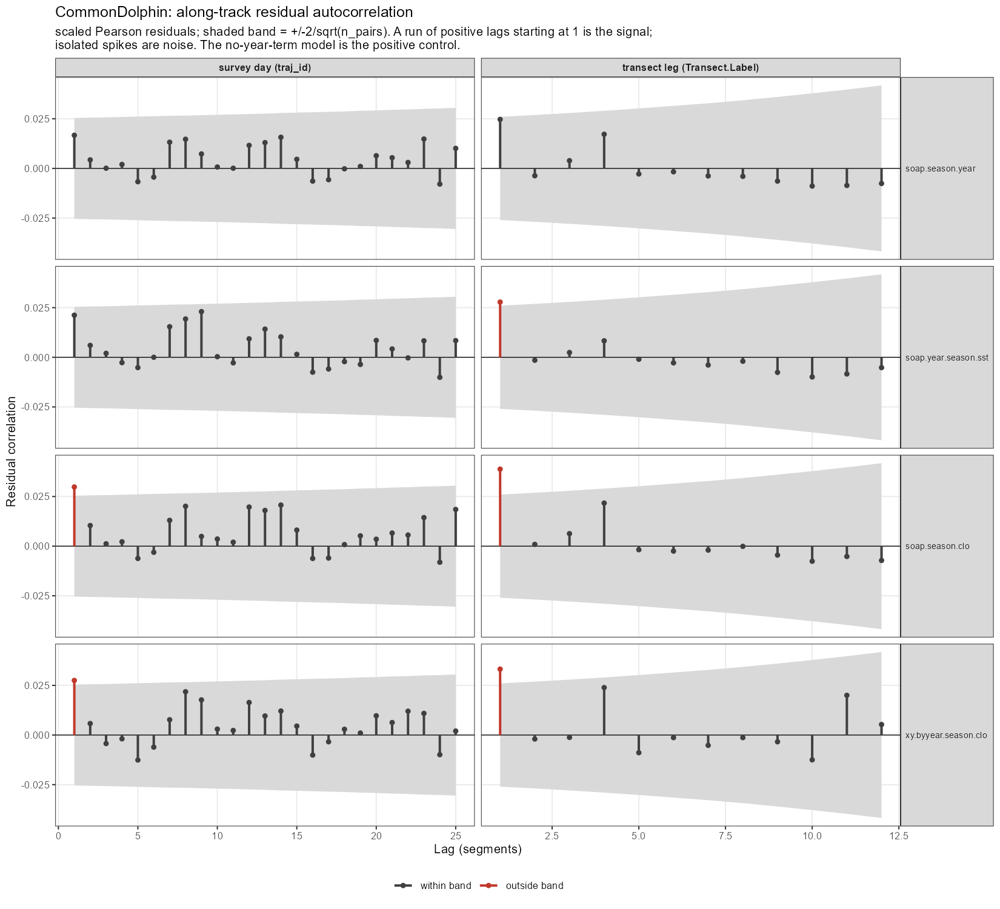
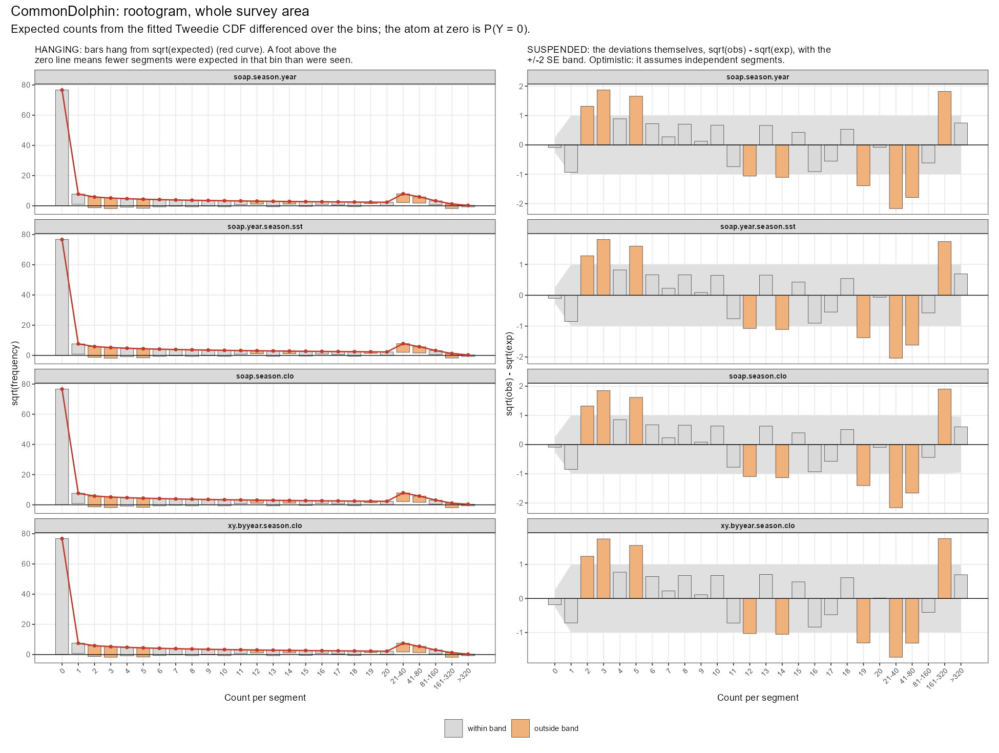
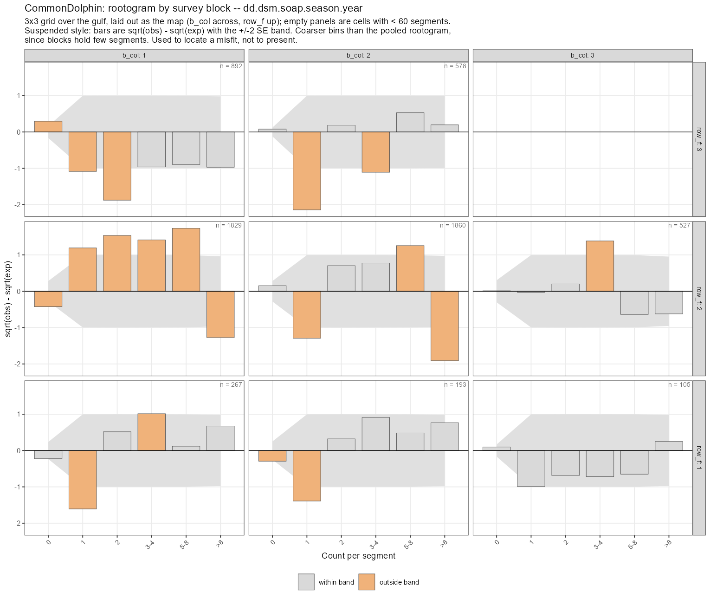
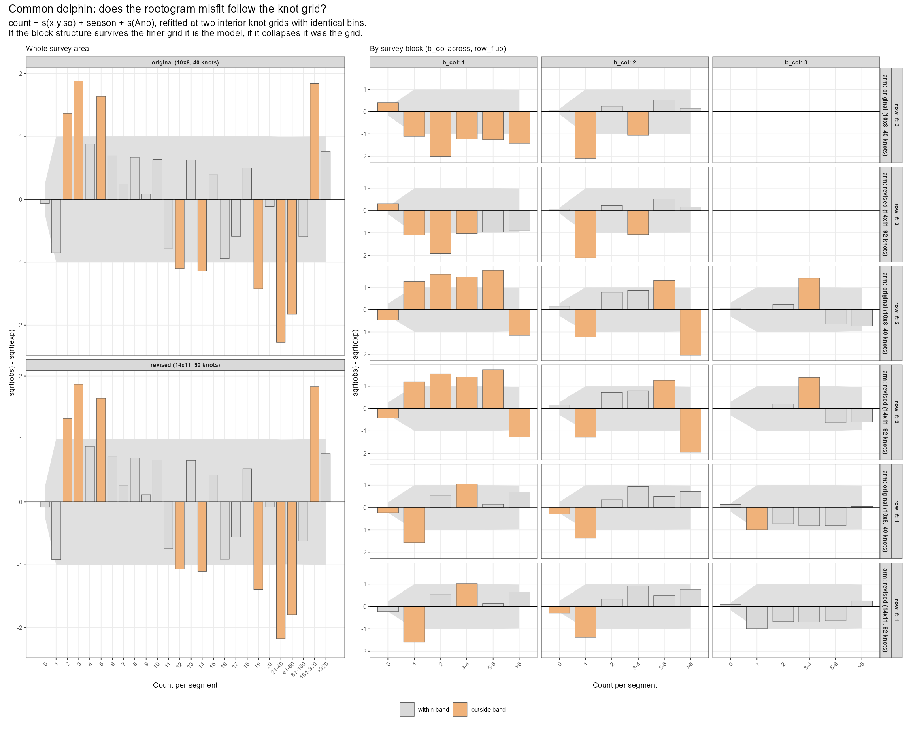
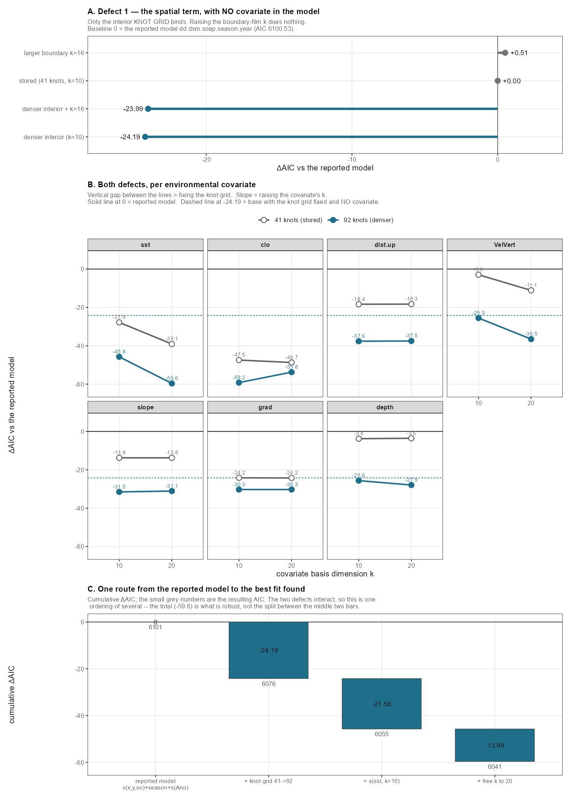
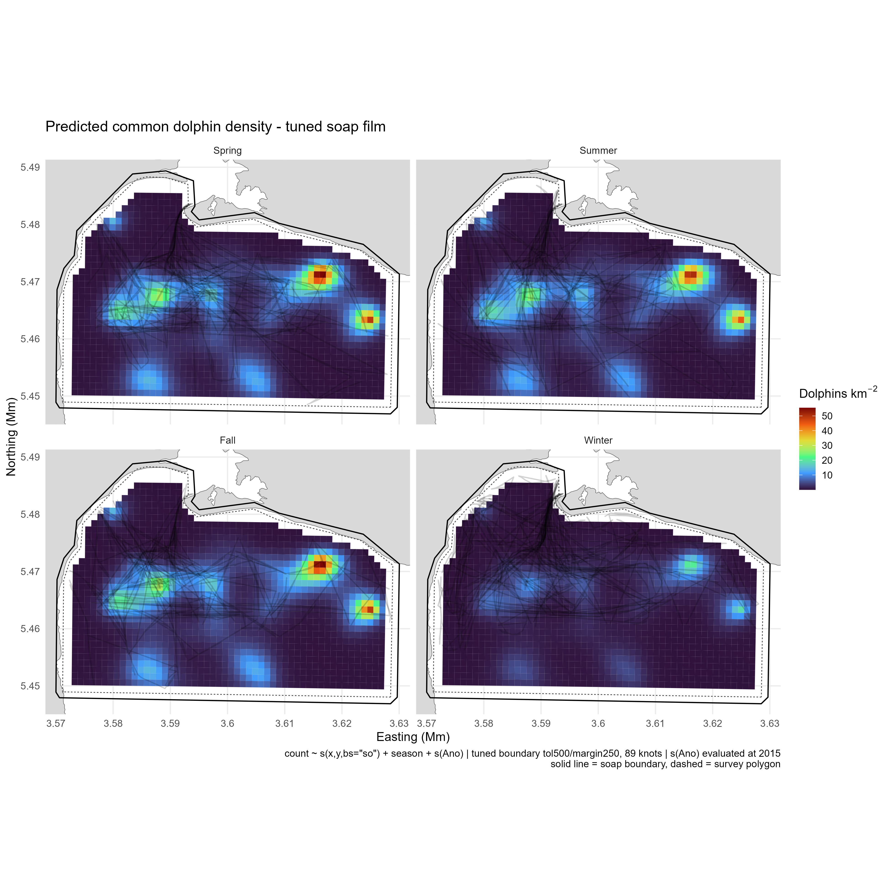
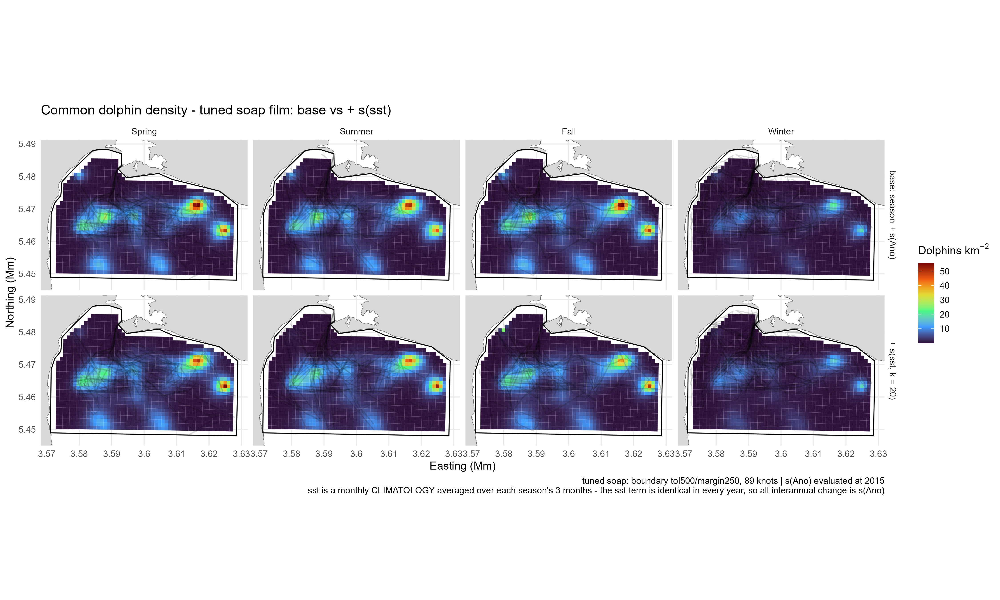
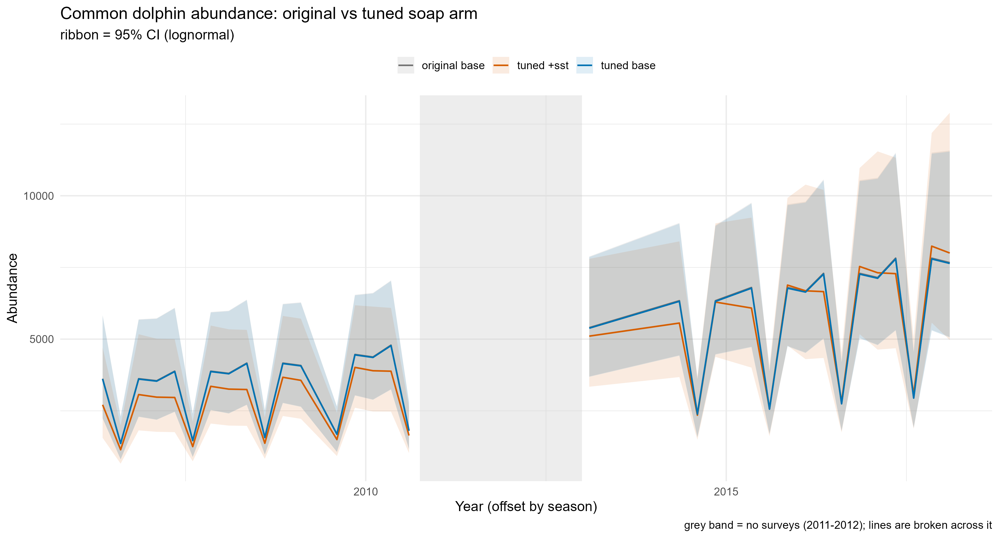
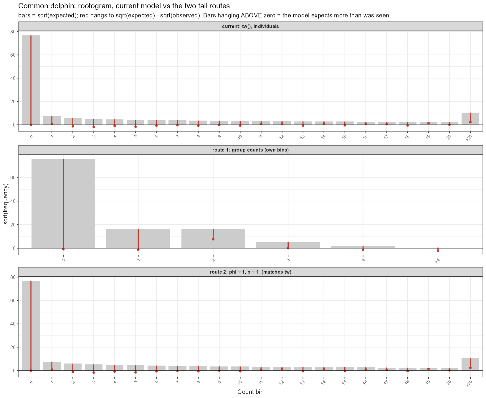
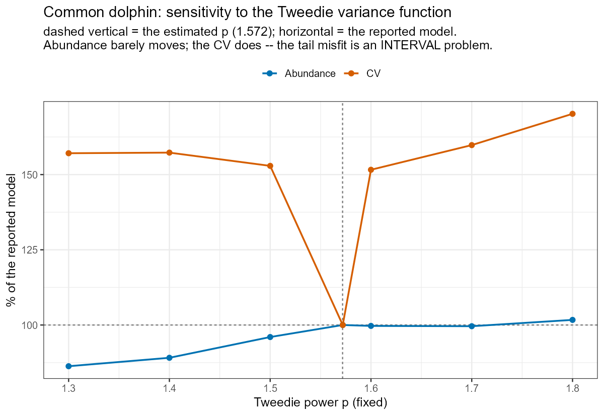

| model | scale | lag1 | band | pct_of_band | lag1_within | n_lags_checked | n_lags_outside | lags_outside | max_abs_cor | n_eff_lag1 | n_segments | verdict |
|---|---|---|---|---|---|---|---|---|---|---|---|---|
| dd.dsm.soap.season.clo | survey day (traj_id) | 0.0298 | 0.0254 | 117 | FALSE | 25 | 1 | 1 | 0.0298 | 5924 | 6288 | FAIL: lag-1 outside band |
| dd.dsm.soap.season.year | survey day (traj_id) | 0.0167 | 0.0254 | 66 | TRUE | 25 | 0 | NA | 0.0167 | 6081 | 6288 | pass |
| dd.dsm.soap.year.season.sst | survey day (traj_id) | 0.0212 | 0.0254 | 83 | TRUE | 25 | 0 | NA | 0.0230 | 6027 | 6288 | pass |
| dd.dsm.xy.byyear.season.clo | survey day (traj_id) | 0.0275 | 0.0254 | 108 | FALSE | 25 | 1 | 1 | 0.0275 | 5951 | 6288 | FAIL: lag-1 outside band |
| dd.dsm.soap.season.clo | transect leg (Transect.Label) | 0.0388 | 0.0260 | 149 | FALSE | 12 | 1 | 1 | 0.0388 | 5818 | 6288 | FAIL: lag-1 outside band |
| dd.dsm.soap.season.year | transect leg (Transect.Label) | 0.0247 | 0.0260 | 95 | TRUE | 12 | 0 | NA | 0.0247 | 5985 | 6288 | pass |
| dd.dsm.soap.year.season.sst | transect leg (Transect.Label) | 0.0278 | 0.0260 | 107 | FALSE | 12 | 1 | 1 | 0.0278 | 5948 | 6288 | FAIL: lag-1 outside band |
| dd.dsm.xy.byyear.season.clo | transect leg (Transect.Label) | 0.0332 | 0.0260 | 128 | FALSE | 12 | 1 | 1 | 0.0332 | 5884 | 6288 | FAIL: lag-1 outside band |
Delfines Comunes – secciones pendientes
1 1. Diagnósticos del modelo
Las tablas de selección de modelos ordenan los candidatos por AIC, y mgcv calcula ese AIC con la corrección por incertidumbre en los parámetros de suavizado de Wood et al. (2016). Esa corrección es la adecuada, pero no rescata tres supuestos sobre los que el ordenamiento igual descansa: que los segmentos son independientes, que cada suavizado tuvo base suficiente para expresarse, y que la distribución ajustada produce los conteos que efectivamente se observaron. Los tres se verifican acá.
1.1 Autocorrelación residual
Un DSM asume que los residuos de los segmentos son independientes. Los segmentos son tramos contiguos de una misma trayectoria, así que no tienen por qué serlo. Si los residuos quedan correlacionados a lo largo de la trayectoria, el tamaño muestral efectivo es menor que el nominal: la abundancia estimada no se sesga mucho, pero los errores estándar se desinflan y las diferencias de AIC se inflan. Es decir, tanto los intervalos de confianza como la selección de modelos quedan sobre-confiados.
El correlograma correlaciona el residuo de cada segmento con el residuo del segmento k posiciones más adelante, a dos escalas: la pata de transecta (escala fina, pocos km) y el día de campaña (escala gruesa). La banda es \(\pm 2/\sqrt{n_{pares}}\).

El resultado es el que sostiene la columna lag1_sig de las tablas de selección: el modelo que se presenta, count ~ s(x,y,bs="so") + season + s(Ano), pasa la prueba a las dos escalas, y los modelos que incluyen s(clo) no la pasan [VERIFICAR TRAS RE-RUN]. Esto es relevante porque s(clo) era, por AIC, el mejor modelo del bloque soap. Un modelo cuya independencia residual no se sostiene no puede seleccionarse por un AIC que asume esa independencia, de modo que el ordenamiento debe leerse con lag1_sig y no sólo con deltaAIC.
Dos advertencias que conviene explicitar. La banda es optimista: trata a los pares de residuos como independientes cuando por construcción se solapan, así que una correlación apenas adentro de la banda es evidencia más débil de lo que parece. Y un correlograma plano significa que no hay correlación no modelada, no que no haya correlación: una superficie espacial flexible que varíe por año puede absorber la estructura a lo largo de la trayectoria dentro del ajuste, que es exactamente el mecanismo de sobre-ajuste que se está testeando. Por eso el conjunto diagnosticado incluye siempre un modelo sin término de año, como control positivo.
1.2 Dimensión de la base (k.check)
Cada suavizado se ajusta dentro de una base de tamaño k. Si el ajuste se apoya contra ese techo, el término no es “tan ondulado como la penalización quiso” sino “tan ondulado como k permitió”, y entonces ni su deviance ni sus grados de libertad efectivos, ni por lo tanto su AIC, miden lo que se pretende que midan.
| model | smooth | k_prime | edf | k_index | p_value | edf_frac | near_ceiling | shrunk | low_k_index | flag | k_index_model_wide |
|---|---|---|---|---|---|---|---|---|---|---|---|
| dd.dsm.soap.season.year | s(x,y) | 97 | 46.737021 | 0.5449204 | 0.0075 | 0.482 | FALSE | FALSE | TRUE | low k-index (see model-wide pattern) | FALSE |
| dd.dsm.soap.season.year | s(Ano) | 9 | 1.000729 | 0.5823313 | 0.3675 | 0.111 | FALSE | FALSE | FALSE | FALSE | |
| dd.dsm.soap.year.season.sst | s(x,y) | 97 | 45.084804 | 0.5960955 | 0.0275 | 0.465 | FALSE | FALSE | TRUE | low k-index (see model-wide pattern) | FALSE |
| dd.dsm.soap.year.season.sst | s(Ano) | 9 | 1.003980 | 0.6345703 | 0.9050 | 0.112 | FALSE | FALSE | FALSE | FALSE | |
| dd.dsm.soap.year.season.sst | s(sst) | 19 | 10.041998 | 0.5836550 | 0.0000 | 0.529 | FALSE | FALSE | TRUE | low k-index (see model-wide pattern) | FALSE |
| dd.dsm.soap.season.clo | s(x,y) | 97 | 40.494657 | 0.5669864 | 0.0000 | 0.417 | FALSE | FALSE | TRUE | low k-index (see model-wide pattern) | TRUE |
| dd.dsm.soap.season.clo | s(clo) | 19 | 11.612426 | 0.5567718 | 0.0000 | 0.611 | FALSE | FALSE | TRUE | low k-index (see model-wide pattern) | TRUE |
| dd.dsm.xy.byyear.season.clo | s(x,y):year_fac2006 | 29 | 2.000006 | 0.6381929 | 0.0000 | 0.069 | FALSE | FALSE | TRUE | low k-index (see model-wide pattern) | TRUE |
| dd.dsm.xy.byyear.season.clo | s(x,y):year_fac2007 | 29 | 17.846614 | 0.6381929 | 0.0000 | 0.615 | FALSE | FALSE | TRUE | low k-index (see model-wide pattern) | TRUE |
| dd.dsm.xy.byyear.season.clo | s(x,y):year_fac2008 | 29 | 11.933947 | 0.6381929 | 0.0000 | 0.412 | FALSE | FALSE | TRUE | low k-index (see model-wide pattern) | TRUE |
| dd.dsm.xy.byyear.season.clo | s(x,y):year_fac2009 | 29 | 10.625700 | 0.6381929 | 0.0000 | 0.366 | FALSE | FALSE | TRUE | low k-index (see model-wide pattern) | TRUE |
| dd.dsm.xy.byyear.season.clo | s(x,y):year_fac2010 | 29 | 8.078565 | 0.6381929 | 0.0000 | 0.279 | FALSE | FALSE | TRUE | low k-index (see model-wide pattern) | TRUE |
| dd.dsm.xy.byyear.season.clo | s(x,y):year_fac2013 | 29 | 2.000574 | 0.6381929 | 0.0000 | 0.069 | FALSE | FALSE | TRUE | low k-index (see model-wide pattern) | TRUE |
| dd.dsm.xy.byyear.season.clo | s(x,y):year_fac2014 | 29 | 14.614521 | 0.6381929 | 0.0000 | 0.504 | FALSE | FALSE | TRUE | low k-index (see model-wide pattern) | TRUE |
| dd.dsm.xy.byyear.season.clo | s(x,y):year_fac2015 | 29 | 10.295861 | 0.6381929 | 0.0000 | 0.355 | FALSE | FALSE | TRUE | low k-index (see model-wide pattern) | TRUE |
| dd.dsm.xy.byyear.season.clo | s(x,y):year_fac2016 | 29 | 16.123708 | 0.6381929 | 0.0000 | 0.556 | FALSE | FALSE | TRUE | low k-index (see model-wide pattern) | TRUE |
| dd.dsm.xy.byyear.season.clo | s(x,y):year_fac2017 | 29 | 18.787195 | 0.6381929 | 0.0000 | 0.648 | FALSE | FALSE | TRUE | low k-index (see model-wide pattern) | TRUE |
| dd.dsm.xy.byyear.season.clo | s(x,y):year_fac2018 | 29 | 2.004473 | 0.6381929 | 0.0000 | 0.069 | FALSE | FALSE | TRUE | low k-index (see model-wide pattern) | TRUE |
| dd.dsm.xy.byyear.season.clo | s(clo) | 9 | 8.348930 | 0.6242774 | 0.0000 | 0.928 | TRUE | FALSE | TRUE | at ceiling - refit at higher k | TRUE |
Acá aparece el hallazgo que motivó todo el trabajo posterior: s(clo) está apoyado contra su techo en todos los modelos que lo incluyen (edf ~8.3-8.4 sobre k_prime = 9) [VERIFICAR TRAS RE-RUN]. Es decir, la clorofila ganaba 47 unidades de AIC dentro del bloque soap con una base que se había quedado corta. Ese es el motivo por el cual las siete covariables ambientales se volvieron a testear a k = 20 (Section 3), y no sólo la marcada.
1.3 Rootogramas
Ni la autocorrelación ni la dimensión de la base preguntan si la distribución ajustada produce los conteos que se vieron. El rootograma sí: compara, por cada clase de conteo, el número de segmentos observados con el número esperado por el modelo, en escala de raíz cuadrada. Esa es la escala en la que el error estándar de \(\sqrt{observado}\) es aproximadamente constante, así que un desvío de un dado tamaño significa lo mismo en la clase del cero que en la cola Kleiber & Zeileis (2016). Eso es lo que hace legibles los dos modos de falla de un conteo por segmento: exceso de ceros y sobredispersión.

No hay exceso de ceros. La clase del cero se ajusta bien en las dos especies, lo cual descarta la explicación que uno probaría primero. El problema de los delfines comunes está en la cola: el modelo sobre-predice los conteos grandes, y lo hace de manera idéntica en los cuatro modelos diagnosticados, incluidos los dos que llevan clorofila. Que el desajuste no se mueva al cambiar las covariables ni la superficie espacial significa que no es un problema que una covariable o la base espacial puedan arreglar: es la distribución de conteos. La sección Section 6 muestra por qué.

El rootograma agregado promedia los desajustes locales, así que se calcula también por bloque. A esa escala aparece estructura espacial: el bloque noroeste queda sobre-predicho en todas las clases positivas y el del centro-oeste al revés. Ese patrón es ambiguo, y la sección siguiente existe para resolver la ambigüedad.
2 2. ¿El desajuste es el modelo o la grilla de nudos?
Una superficie espacial que no puede doblarse tanto como los datos piden produce exactamente el patrón por bloque descripto arriba. Un modelo genuinamente mal especificado también. El ajuste guardado no puede distinguirlos, porque sólo una grilla de nudos fue alguna vez sometida a un rootograma.
El experimento mínimo que discrimina es ajustar una sola fórmula (la que el reporte presenta) a dos grillas de nudos, y comparar los rootogramas con clases idénticas. Si la estructura por bloque persiste con la grilla fina, es el modelo; si se derrumba, era la grilla. La fórmula no lleva ninguna covariable ambiental, así que la grilla es lo único que difiere entre los dos ajustes.

| arm | bin | lower | upper | observed | expected | se | sqrt_obs | sqrt_exp | ymax | ymin | resid | band | sig |
|---|---|---|---|---|---|---|---|---|---|---|---|---|---|
| original (10x8, 40 knots) | 0 | 0 | 0 | 5862 | 5872.0595909 | 19.4854917 | 76.563699 | 76.6293651 | 76.6293651 | 0.0656661 | -0.0656661 | 0.2542823 | FALSE |
| original (10x8, 40 knots) | 1 | 0 | 1 | 46 | 58.2680981 | 7.5975866 | 6.782330 | 7.6333543 | 7.6333543 | 0.8510243 | -0.8510243 | 0.9953143 | FALSE |
| original (10x8, 40 knots) | 2 | 1 | 2 | 51 | 33.3720772 | 5.7603462 | 7.141428 | 5.7768570 | 5.7768570 | -1.3645714 | 1.3645714 | 0.9971419 | TRUE |
| original (10x8, 40 knots) | 3 | 2 | 3 | 49 | 26.2000766 | 5.1065499 | 7.000000 | 5.1186010 | 5.1186010 | -1.8813990 | 1.8813990 | 0.9976456 | TRUE |
| original (10x8, 40 knots) | 4 | 3 | 4 | 31 | 21.9819644 | 4.6788990 | 5.567764 | 4.6884928 | 4.6884928 | -0.8792716 | 0.8792716 | 0.9979538 | FALSE |
| original (10x8, 40 knots) | 5 | 4 | 5 | 36 | 19.0494994 | 4.3566124 | 6.000000 | 4.3645732 | 4.3645732 | -1.6354268 | 1.6354268 | 0.9981760 | TRUE |
| original (10x8, 40 knots) | 6 | 5 | 6 | 23 | 16.8298010 | 4.0956407 | 4.795832 | 4.1024140 | 4.1024140 | -0.6934175 | 0.6934175 | 0.9983489 | FALSE |
| original (10x8, 40 knots) | 7 | 6 | 7 | 17 | 15.0618483 | 3.8750976 | 4.123106 | 3.8809597 | 3.8809597 | -0.2421459 | 0.2421459 | 0.9984895 | FALSE |
| original (10x8, 40 knots) | 8 | 7 | 8 | 19 | 13.6057142 | 3.6834551 | 4.358899 | 3.6885924 | 3.6885924 | -0.6703065 | 0.6703065 | 0.9986072 | FALSE |
| original (10x8, 40 knots) | 9 | 8 | 9 | 13 | 12.3777847 | 3.5136618 | 3.605551 | 3.5182076 | 3.5182076 | -0.0873437 | 0.0873437 | 0.9987079 | FALSE |
| original (10x8, 40 knots) | 10 | 9 | 10 | 16 | 11.3240640 | 3.3610713 | 4.000000 | 3.3651247 | 3.3651247 | -0.6348753 | 0.6348753 | 0.9987955 | FALSE |
| original (10x8, 40 knots) | 11 | 10 | 11 | 6 | 10.4076074 | 3.2224451 | 2.449490 | 3.2260824 | 3.2260824 | 0.7765926 | -0.7765926 | 0.9988725 | FALSE |
| original (10x8, 40 knots) | 12 | 11 | 12 | 4 | 9.6019878 | 3.0954261 | 2.000000 | 3.0987074 | 3.0987074 | 1.0987074 | -1.0987074 | 0.9989411 | TRUE |
| original (10x8, 40 knots) | 13 | 12 | 13 | 13 | 8.8876273 | 2.9782387 | 3.605551 | 2.9812124 | 2.9812124 | -0.6243389 | 0.6243389 | 0.9990025 | FALSE |
| original (10x8, 40 knots) | 14 | 13 | 14 | 3 | 8.2496065 | 2.8695072 | 1.732051 | 2.8722128 | 2.8722128 | 1.1401620 | -1.1401620 | 0.9990580 | TRUE |
| original (10x8, 40 knots) | 15 | 14 | 15 | 10 | 7.6762892 | 2.7681415 | 3.162278 | 2.7706117 | 2.7706117 | -0.3916660 | 0.3916660 | 0.9991084 | FALSE |
| original (10x8, 40 knots) | 16 | 15 | 16 | 3 | 7.1584219 | 2.6732604 | 1.732051 | 2.6755227 | 2.6755227 | 0.9434719 | -0.9434719 | 0.9991544 | FALSE |
| original (10x8, 40 knots) | 17 | 16 | 17 | 4 | 6.6885242 | 2.5841404 | 2.000000 | 2.5862181 | 2.5862181 | 0.5862181 | -0.5862181 | 0.9991966 | FALSE |
| original (10x8, 40 knots) | 18 | 17 | 18 | 9 | 6.2604633 | 2.5001789 | 3.000000 | 2.5020918 | 2.5020918 | -0.4979082 | 0.4979082 | 0.9992355 | FALSE |
| original (10x8, 40 knots) | 19 | 18 | 19 | 1 | 5.8691492 | 2.4208675 | 1.000000 | 2.4226327 | 2.4226327 | 1.4226327 | -1.4226327 | 0.9992714 | TRUE |
| original (10x8, 40 knots) | 20 | 19 | 20 | 5 | 5.5103121 | 2.3457730 | 2.236068 | 2.3474054 | 2.3474054 | 0.1113374 | -0.1113374 | 0.9993046 | FALSE |
| original (10x8, 40 knots) | 21-40 | 20 | 40 | 33 | 64.2822041 | 7.9427389 | 5.744563 | 8.0176184 | 8.0176184 | 2.2730557 | -2.2730557 | 0.9906606 | TRUE |
| original (10x8, 40 knots) | 41-80 | 40 | 80 | 17 | 35.3943462 | 5.9026994 | 4.123106 | 5.9493148 | 5.9493148 | 1.8262091 | -1.8262091 | 0.9921646 | TRUE |
| original (10x8, 40 knots) | 81-160 | 80 | 160 | 7 | 10.4764710 | 3.2202815 | 2.645751 | 3.2367377 | 3.2367377 | 0.5909864 | -0.5909864 | 0.9949158 | FALSE |
| original (10x8, 40 knots) | 161-320 | 160 | 320 | 9 | 1.3484256 | 1.1584710 | 3.000000 | 1.1612173 | 1.1612173 | -1.8387827 | 1.8387827 | 0.9976350 | TRUE |
| original (10x8, 40 knots) | >320 | 320 | Inf | 1 | 0.0580455 | 0.2408020 | 1.000000 | 0.2409263 | 0.2409263 | -0.7590737 | 0.7590737 | 0.9994841 | FALSE |
| revised (14x11, 92 knots) | 0 | 0 | 0 | 5862 | 5875.1177071 | 19.3720774 | 76.563699 | 76.6493164 | 76.6493164 | 0.0856174 | -0.0856174 | 0.2527365 | FALSE |
| revised (14x11, 92 knots) | 1 | 0 | 1 | 46 | 59.2754207 | 7.6622863 | 6.782330 | 7.6990532 | 7.6990532 | 0.9167232 | -0.9167232 | 0.9952245 | FALSE |
| revised (14x11, 92 knots) | 2 | 1 | 2 | 51 | 33.8120424 | 5.7977368 | 7.141428 | 5.8148123 | 5.8148123 | -1.3266161 | 1.3266161 | 0.9970634 | TRUE |
| revised (14x11, 92 knots) | 3 | 2 | 3 | 49 | 26.3233108 | 5.1181730 | 7.000000 | 5.1306248 | 5.1306248 | -1.8693752 | 1.8693752 | 0.9975730 | TRUE |
| revised (14x11, 92 knots) | 4 | 3 | 4 | 31 | 21.9441237 | 4.6745383 | 5.567764 | 4.6844555 | 4.6844555 | -0.8833088 | 0.8833088 | 0.9978829 | FALSE |
| revised (14x11, 92 knots) | 5 | 4 | 5 | 36 | 18.9254003 | 4.3420962 | 6.000000 | 4.3503334 | 4.3503334 | -1.6496666 | 1.6496666 | 0.9981065 | TRUE |
| revised (14x11, 92 knots) | 6 | 5 | 6 | 23 | 16.6592143 | 4.0745543 | 4.795832 | 4.0815701 | 4.0815701 | -0.7142614 | 0.7142614 | 0.9982811 | FALSE |
| revised (14x11, 92 knots) | 7 | 6 | 7 | 17 | 14.8670676 | 3.8497055 | 4.123106 | 3.8557837 | 3.8557837 | -0.2673220 | 0.2673220 | 0.9984236 | FALSE |
| revised (14x11, 92 knots) | 8 | 7 | 8 | 19 | 13.3996734 | 3.6552246 | 4.358899 | 3.6605564 | 3.6605564 | -0.6983425 | 0.6983425 | 0.9985434 | FALSE |
| revised (14x11, 92 knots) | 9 | 8 | 9 | 13 | 12.1681739 | 3.4835686 | 3.605551 | 3.4882910 | 3.4882910 | -0.1172603 | 0.1172603 | 0.9986462 | FALSE |
| revised (14x11, 92 knots) | 10 | 9 | 10 | 16 | 11.1155364 | 3.3297820 | 4.000000 | 3.3339971 | 3.3339971 | -0.6660029 | 0.6660029 | 0.9987357 | FALSE |
| revised (14x11, 92 knots) | 11 | 10 | 11 | 6 | 10.2030076 | 3.1904284 | 2.449490 | 3.1942147 | 3.1942147 | 0.7447250 | -0.7447250 | 0.9988146 | FALSE |
| revised (14x11, 92 knots) | 12 | 11 | 12 | 4 | 9.4030572 | 3.0630210 | 2.000000 | 3.0664405 | 3.0664405 | 1.0664405 | -1.0664405 | 0.9988849 | TRUE |
| revised (14x11, 92 knots) | 13 | 12 | 13 | 13 | 8.6954189 | 2.9456970 | 3.605551 | 2.9487996 | 2.9487996 | -0.6567517 | 0.6567517 | 0.9989478 | FALSE |
| revised (14x11, 92 knots) | 14 | 13 | 14 | 3 | 8.0647342 | 2.8370212 | 1.732051 | 2.8398476 | 2.8398476 | 1.1077968 | -1.1077968 | 0.9990047 | TRUE |
| revised (14x11, 92 knots) | 15 | 14 | 15 | 10 | 7.4990812 | 2.7358611 | 3.162278 | 2.7384450 | 2.7384450 | -0.4238326 | 0.4238326 | 0.9990564 | FALSE |
| revised (14x11, 92 knots) | 16 | 15 | 16 | 3 | 6.9890169 | 2.6413051 | 1.732051 | 2.6436749 | 2.6436749 | 0.9116241 | -0.9116241 | 0.9991036 | FALSE |
| revised (14x11, 92 knots) | 17 | 16 | 17 | 4 | 6.5269330 | 2.5526067 | 2.000000 | 2.5547863 | 2.5547863 | 0.5547863 | -0.5547863 | 0.9991469 | FALSE |
| revised (14x11, 92 knots) | 18 | 17 | 18 | 9 | 6.1066091 | 2.4691456 | 3.000000 | 2.4711554 | 2.4711554 | -0.5288446 | 0.5288446 | 0.9991867 | FALSE |
| revised (14x11, 92 knots) | 19 | 18 | 19 | 1 | 5.7228948 | 2.3903997 | 1.000000 | 2.3922573 | 2.3922573 | 1.3922573 | -1.3922573 | 0.9992235 | TRUE |
| revised (14x11, 92 knots) | 20 | 19 | 20 | 5 | 5.3714783 | 2.3159244 | 2.236068 | 2.3176450 | 2.3176450 | 0.0815770 | -0.0815770 | 0.9992576 | FALSE |
| revised (14x11, 92 knots) | 21-40 | 20 | 40 | 33 | 62.6996915 | 7.8381588 | 5.744563 | 7.9183137 | 7.9183137 | 2.1737510 | -2.1737510 | 0.9898773 | TRUE |
| revised (14x11, 92 knots) | 41-80 | 40 | 80 | 17 | 35.0161834 | 5.8659127 | 4.123106 | 5.9174474 | 5.9174474 | 1.7943417 | -1.7943417 | 0.9912911 | TRUE |
| revised (14x11, 92 knots) | 81-160 | 80 | 160 | 7 | 10.6750752 | 3.2494616 | 2.645751 | 3.2672734 | 3.2672734 | 0.6215221 | -0.6215221 | 0.9945484 | FALSE |
| revised (14x11, 92 knots) | 161-320 | 160 | 320 | 9 | 1.3657150 | 1.1659327 | 3.000000 | 1.1686381 | 1.1686381 | -1.8313619 | 1.8313619 | 0.9976850 | TRUE |
| revised (14x11, 92 knots) | >320 | 320 | Inf | 1 | 0.0534332 | 0.2310315 | 1.000000 | 0.2311562 | 0.2311562 | -0.7688438 | 0.7688438 | 0.9994608 | FALSE |
El resultado es que el AIC y el ajuste no coinciden. Refinar la grilla de 41 a 92 nudos vale 24.19 unidades de AIC y 3.5 puntos de deviance, pero prácticamente no mueve el rootograma. Es decir, la grilla estaba efectivamente sub-resuelta, y ese hallazgo es real y motivó el retune, pero el desajuste en la cola no era la grilla. Son dos defectos distintos que se habían confundido en un solo síntoma, y el precio de no separarlos habría sido seguir agregando nudos para arreglar algo que los nudos no arreglan.
3 3. Covariables ambientales y dimensión de base
El reporte descarta las covariables ambientales porque agregan poca deviance (0.26 contra 0.22). Ese argumento tenía un problema: dentro del bloque soap las covariables le ganaban al modelo presentado por mucho (s(clo) por 47.5 unidades de AIC), y el k.check mostraba a s(clo) apoyado contra su techo. Un suavizado que se quedó sin base no da una medida justa de lo que la covariable vale, ni en deviance ni en AIC. Como el default k = 10 aplica a las siete covariables, había que re-testear las siete.
| covariate | AIC_10 | AIC_20 | dAIC_vs_base_10 | dAIC_vs_base_20 | edf_10 | edf_20 | edf_frac_10 | edf_frac_20 | k_index_10 | k_index_20 | p_value_10 | p_value_20 | at_ceiling_10 | at_ceiling_20 | Dev_10 | Dev_20 |
|---|---|---|---|---|---|---|---|---|---|---|---|---|---|---|---|---|
| clo | 6053.07 | 6051.81 | -47.46 | -48.72 | 8.43 | 11.87 | 0.937 | 0.625 | 0.539 | 0.538 | 0.000 | 0.000 | TRUE | FALSE | 0.258 | 0.261 |
| sst | 6072.73 | 6061.45 | -27.80 | -39.08 | 6.54 | 10.06 | 0.727 | 0.529 | 0.568 | 0.545 | 0.002 | 0.000 | FALSE | FALSE | 0.245 | 0.256 |
| grad | 6076.34 | 6076.28 | -24.19 | -24.25 | 2.88 | 2.91 | 0.320 | 0.153 | 0.588 | 0.541 | 0.002 | 0.000 | FALSE | FALSE | 0.240 | 0.240 |
| dist.up | 6082.18 | 6082.23 | -18.35 | -18.30 | 2.38 | 2.44 | 0.265 | 0.129 | 0.572 | 0.590 | 0.035 | 0.568 | FALSE | FALSE | 0.234 | 0.234 |
| slope | 6086.77 | 6086.78 | -13.76 | -13.75 | 4.70 | 5.18 | 0.522 | 0.273 | 0.601 | 0.577 | 0.402 | 0.005 | FALSE | FALSE | 0.237 | 0.238 |
| VelVert | 6097.56 | 6089.42 | -2.97 | -11.11 | 5.63 | 8.62 | 0.625 | 0.454 | 0.573 | 0.575 | 0.002 | 0.002 | FALSE | FALSE | 0.230 | 0.238 |
| depth | 6096.75 | 6096.97 | -3.78 | -3.56 | 3.55 | 3.66 | 0.394 | 0.193 | 0.589 | 0.599 | 0.075 | 0.148 | FALSE | FALSE | 0.225 | 0.225 |
| variant | n_knots | k_bnd | AIC | df | edf_xy | k_prime_xy | edf_frac_xy |
|---|---|---|---|---|---|---|---|
| stored (41 knots, k=10) | 41 | 10 | 6100.53 | 40.86 | 30.93 | 49 | 0.631 |
| denser interior (k=10) | 92 | 10 | 6076.34 | 56.67 | 45.01 | 100 | 0.450 |
| larger boundary k=16 | 41 | 16 | 6101.04 | 38.59 | 29.84 | 55 | 0.543 |
| denser interior + k=16 | 92 | 16 | 6076.54 | 56.76 | 45.01 | 106 | 0.425 |
El estudio corrigió dos veces la premisa con la que había empezado, y las dos correcciones importan más que la pregunta original.
Primero, el techo de s(clo) era casi inocuo. Liberarlo de k = 10 a k = 20 movió su ventaja de -47.46 a -48.72 solamente. Las covariables que sí estaban materialmente limitadas por la base fueron s(sst) (-27.80 a -39.08) y s(VelVert) (-2.97 a -11.11), y ninguna de las dos estaba contra su techo (edf_frac 0.73 y 0.63). De modo que edf_frac > 0.8 no es un filtro suficiente para decidir si k está limitando, que es la razón por la cual se testearon las siete y no sólo la marcada.
Segundo, y más importante, el defecto mayor no era una covariable. La grilla de nudos interiores estaba sub-resuelta: pasar de 41 a 92 nudos vale 24.19 unidades de AIC y 3.5 puntos de deviance sin ninguna covariable en el modelo. Subir en cambio la dimensión k de la película de borde no hizo nada (+0.51), así que el control que ataba era la grilla interior y no k.
| covariate | knots | k | AIC | edf | Dev | dAIC_vs_reported |
|---|---|---|---|---|---|---|
| VelVert | 41 | 10 | 6097.56 | 5.63 | 0.230 | -2.97 |
| VelVert | 41 | 20 | 6089.42 | 8.62 | 0.238 | -11.11 |
| VelVert | 92 | 10 | 6074.99 | 5.39 | 0.264 | -25.54 |
| VelVert | 92 | 20 | 6064.01 | 8.91 | 0.274 | -36.52 |
| clo | 41 | 10 | 6053.07 | 8.43 | 0.258 | -47.46 |
| clo | 41 | 20 | 6051.81 | 11.87 | 0.261 | -48.72 |
| clo | 92 | 10 | 6041.32 | 8.44 | 0.280 | -59.21 |
| clo | 92 | 20 | 6046.77 | 11.74 | 0.281 | -53.76 |
| depth | 41 | 10 | 6096.75 | 3.55 | 0.225 | -3.78 |
| depth | 41 | 20 | 6096.97 | 3.66 | 0.225 | -3.56 |
| depth | 92 | 10 | 6074.90 | 3.28 | 0.256 | -25.63 |
| depth | 92 | 20 | 6072.61 | 3.46 | 0.257 | -27.92 |
| dist.up | 41 | 10 | 6082.18 | 2.38 | 0.234 | -18.35 |
| dist.up | 41 | 20 | 6082.23 | 2.44 | 0.234 | -18.30 |
| dist.up | 92 | 10 | 6062.90 | 2.49 | 0.267 | -37.63 |
| dist.up | 92 | 20 | 6063.02 | 2.54 | 0.267 | -37.51 |
| grad | 41 | 10 | 6076.34 | 2.88 | 0.240 | -24.19 |
| grad | 41 | 20 | 6076.28 | 2.91 | 0.240 | -24.25 |
| grad | 92 | 10 | 6070.25 | 2.69 | 0.266 | -30.28 |
| grad | 92 | 20 | 6070.25 | 2.72 | 0.266 | -30.28 |
| slope | 41 | 10 | 6086.77 | 4.70 | 0.237 | -13.76 |
| slope | 41 | 20 | 6086.78 | 5.18 | 0.238 | -13.75 |
| slope | 92 | 10 | 6069.02 | 4.15 | 0.264 | -31.51 |
| slope | 92 | 20 | 6069.45 | 4.44 | 0.264 | -31.08 |
| sst | 41 | 10 | 6072.73 | 6.54 | 0.245 | -27.80 |
| sst | 41 | 20 | 6061.45 | 10.06 | 0.256 | -39.08 |
| sst | 92 | 10 | 6054.78 | 5.92 | 0.274 | -45.75 |
| sst | 92 | 20 | 6040.89 | 9.92 | 0.285 | -59.64 |
| covariate | g41_k10 | g41_k20 | g92_k10 | g92_k20 | covariate_k_effect_at41 | covariate_k_effect_at92 | grid_effect_at_k10 | grid_effect_at_k20 |
|---|---|---|---|---|---|---|---|---|
| sst | -27.80 | -39.08 | -45.75 | -59.64 | -11.28 | -13.89 | -17.95 | -20.56 |
| clo | -47.46 | -48.72 | -59.21 | -53.76 | -1.26 | 5.45 | -11.75 | -5.04 |
| dist.up | -18.35 | -18.30 | -37.63 | -37.51 | 0.05 | 0.12 | -19.28 | -19.21 |
| VelVert | -2.97 | -11.11 | -25.54 | -36.52 | -8.14 | -10.98 | -22.57 | -25.41 |
| slope | -13.76 | -13.75 | -31.51 | -31.08 | 0.01 | 0.43 | -17.75 | -17.33 |
| grad | -24.19 | -24.25 | -30.28 | -30.28 | -0.06 | 0.00 | -6.09 | -6.03 |
| depth | -3.78 | -3.56 | -25.63 | -27.92 | 0.22 | -2.29 | -21.85 | -24.36 |

La consecuencia para el reporte es que descartar las covariables ambientales en delfines comunes no está sostenido por el AIC una vez que la base es adecuada: con la grilla y la base corregidas, s(sst) y s(clo) valen del orden de 30 a 35 unidades. La decisión de presentar el modelo sin covariables se sostiene por otros motivos, que conviene enunciar como tales: la ganancia en deviance sigue siendo marginal, y las covariables ambientales son climatologías sin dimensión anual, de modo que no pueden aportar nada a la tendencia interanual que es el objeto del trabajo.
4 4. Ajuste fino de la película soap: borde y grilla de nudos
4.1 Por qué el borde va primero
El borde guardado era un polígono de 9 vértices y 2184.6 km2 contra un polígono de survey de 1811.0 km2 y 21 vértices: 20.6 % más grande en área, con cada vértice unos 2.91 km afuera del área de survey. La consecuencia es que sólo 44 de 6288 segmentos quedaban a menos de 2 km del borde soap, cuando 577 quedan a menos de 2 km del borde real del área. El sentido entero de una película soap es imponer comportamiento razonable en el borde, de modo que un borde puesto a 3 km de los datos casi no ejerce esa función.
Llegó ahí por una buena razón: 4_CommonDolphin_DSM_soap.R infla el borde hacia afuera porque una película soap da error si hay datos afuera de su borde, e inflarlo era el arreglo seguro. El estudio pregunta qué cuesta o qué compra uno más ajustado.
| tol | margin | stored | buffer_out | vertices | area_km2 | pct_larger | seg_outside | seg_within_2km | min_dist_m | usable |
|---|---|---|---|---|---|---|---|---|---|---|
| 3000 | 2000 | TRUE | 2912 | 9 | 2184.6 | 20.6 | 0 | 44 | 827 | TRUE |
| 3000 | 250 | FALSE | 1162 | 9 | 1880.4 | 3.8 | 32 | 337 | 2 | FALSE |
| 500 | 2000 | FALSE | 2912 | 22 | 2348.7 | 29.7 | 0 | 2 | 1928 | TRUE |
| 500 | 250 | FALSE | 1162 | 19 | 2012.0 | 11.1 | 0 | 247 | 230 | TRUE |
4.2 El barrido de nudos, y por qué no se tomó el mínimo de AIC
La grilla se sintoniza después del borde y no antes, porque make.soapgrid() llena el borde y el filtro de distancia descarta los nudos cercanos a él: la grilla queda definida respecto del borde que esté vigente.
| tol | margin | ngrid | n_knots | AIC | df | edf_xy | k_prime_xy | edf_frac_xy | Dev | edf_gain | knot_gain | edf_per_10knots |
|---|---|---|---|---|---|---|---|---|---|---|---|---|
| 500 | 250 | 10x8 | 41 | 6099.74 | 41.05 | 31.30 | 49 | 0.639 | 0.219 | NA | NA | NA |
| 500 | 250 | 12x9 | 60 | 6089.68 | 51.55 | 39.62 | 68 | 0.583 | 0.238 | 8.32 | 19 | 4.38 |
| 500 | 250 | 14x11 | 89 | 6070.35 | 57.42 | 46.74 | 97 | 0.482 | 0.258 | 7.12 | 29 | 2.46 |
| 500 | 250 | 16x13 | 125 | 6065.44 | 69.12 | 57.04 | 133 | 0.429 | 0.275 | 10.30 | 36 | 2.86 |
| 500 | 250 | 18x14 | 156 | 6042.49 | 77.73 | 65.94 | 164 | 0.402 | 0.298 | 8.90 | 31 | 2.87 |
| 500 | 250 | 20x16 | 204 | 6036.29 | 83.90 | 72.14 | 212 | 0.340 | 0.309 | 6.20 | 48 | 1.29 |
| 500 | 250 | 23x18 | 272 | 6003.90 | 99.65 | 87.19 | 280 | 0.311 | 0.344 | 15.05 | 68 | 2.21 |
| 500 | 250 | 26x21 | 363 | 5987.06 | 112.87 | 100.47 | 371 | 0.271 | 0.367 | 13.28 | 91 | 1.46 |
| 500 | 250 | 30x24 | 485 | 5967.83 | 128.26 | 115.50 | 493 | 0.234 | 0.392 | 15.03 | 122 | 1.23 |
| 500 | 2000 | 10x8 | 41 | 6094.03 | 39.02 | 29.89 | 49 | 0.610 | 0.220 | NA | NA | NA |
| 500 | 2000 | 12x9 | 60 | 6095.25 | 51.73 | 37.16 | 68 | 0.547 | 0.235 | 7.27 | 19 | 3.83 |
| 500 | 2000 | 14x11 | 91 | 6085.11 | 55.94 | 43.39 | 99 | 0.438 | 0.247 | 6.23 | 31 | 2.01 |
| 500 | 2000 | 16x13 | 127 | 6066.24 | 69.00 | 54.53 | 135 | 0.404 | 0.274 | 11.14 | 36 | 3.09 |
| 500 | 2000 | 18x14 | 160 | 6064.61 | 70.54 | 57.43 | 168 | 0.342 | 0.277 | 2.90 | 33 | 0.88 |
| 500 | 2000 | 20x16 | 206 | 6046.38 | 81.77 | 67.37 | 214 | 0.315 | 0.300 | 9.94 | 46 | 2.16 |
| 3000 | 2000 | 10x8 | 40 | 6100.52 | 40.90 | 30.89 | 48 | 0.643 | 0.218 | NA | NA | NA |
| 3000 | 2000 | 12x9 | 59 | 6087.98 | 46.02 | 36.31 | 67 | 0.542 | 0.233 | 5.42 | 19 | 2.85 |
| 3000 | 2000 | 14x11 | 90 | 6076.16 | 56.56 | 44.98 | 98 | 0.459 | 0.253 | 8.67 | 31 | 2.80 |
| 3000 | 2000 | 16x13 | 126 | 6063.13 | 66.80 | 54.74 | 134 | 0.409 | 0.273 | 9.76 | 36 | 2.71 |
| 3000 | 2000 | 18x14 | 156 | 6061.32 | 71.59 | 58.82 | 164 | 0.359 | 0.280 | 4.08 | 30 | 1.36 |
| 3000 | 2000 | 20x16 | 200 | 6057.70 | 78.13 | 64.96 | 208 | 0.312 | 0.290 | 6.14 | 44 | 1.40 |
El criterio es la grilla más chica a la que edf_xy deja de subir, que es el punto en el que la base dejó de ser la restricción que ata. Perseguir en cambio el mínimo de AIC agrega nudos con retorno decreciente y termina haciendo fallar el solver de la PDE. Acá esa distinción no es teórica: el AIC sigue bajando hasta 485 nudos, pero la autocorrelación residual de rezago 1 sube con él y se sale de su banda. Un AIC que sigue mejorando mientras se degrada el supuesto de independencia sobre el que ese mismo AIC se calcula no es una ganancia confiable.
| ngrid | n_knots | AIC | lag1_tr | band_tr | lag2_tr | lag1_day | band_day | lag2_day |
|---|---|---|---|---|---|---|---|---|
| 10x8 | 41 | 6099.74 | 0.0215 | 0.026 | -0.0018 | 0.0137 | 0.0254 | 0.0052 |
| 20x16 | 204 | 6036.29 | 0.0305 | 0.026 | -0.0018 | 0.0177 | 0.0254 | 0.0113 |
| 26x21 | 363 | 5987.06 | 0.0374 | 0.026 | 0.0003 | 0.0232 | 0.0254 | 0.0156 |
| 30x24 | 485 | 5967.83 | 0.0441 | 0.026 | 0.0029 | 0.0301 | 0.0254 | 0.0162 |
4.3 La configuración adoptada
| arm | model | name | env | df | AIC | deltaAIC | deltaAIC_spec | Dev | p_hat | n | edf_xy | k_prime_xy | edf_frac_xy | edf_env | k_prime_env | edf_frac_env | lag1 | lag1_band | lag1_sig |
|---|---|---|---|---|---|---|---|---|---|---|---|---|---|---|---|---|---|---|---|
| tuned | count ~ s(x,y,so) + season + s(Ano) + s(sst) | dd.dsm.soap.year.season.sst | sst | 67.27 | 6034.93 | 0.00 | 0.00 | 0.290 | 1.5639 | 6288 | 45.08 | 97 | 0.465 | 10.04 | 19 | 0.529 | 0.0278 | 0.026 | TRUE |
| tuned | count ~ s(x,y,so) + s(Ano) + s(sst) | dd.dsm.soap.year.sst | sst | 64.52 | 6040.11 | 5.18 | 5.18 | 0.284 | 1.5626 | 6288 | 44.33 | 97 | 0.457 | 11.61 | 19 | 0.611 | 0.0263 | 0.026 | TRUE |
| revised | count ~ s(x,y,so) + season + s(Ano) + s(sst) | dd.dsm.soap.year.season.sst | sst | 65.66 | 6040.89 | 5.96 | 0.00 | 0.285 | 1.5651 | 6288 | 43.27 | 100 | 0.433 | 9.92 | 19 | 0.522 | 0.0266 | 0.026 | TRUE |
| tuned | count ~ s(x,y,so) + season + s(Ano) + s(clo) | dd.dsm.soap.year.season.clo | clo | 67.47 | 6041.45 | 6.52 | 6.52 | 0.287 | 1.5659 | 6288 | 39.76 | 97 | 0.410 | 11.74 | 19 | 0.618 | 0.0331 | 0.026 | TRUE |
| tuned | count ~ s(x,y,so) + season + s(clo) | dd.dsm.soap.season.clo | clo | 63.57 | 6041.52 | 6.59 | 6.59 | 0.282 | 1.5656 | 6288 | 40.49 | 97 | 0.417 | 11.61 | 19 | 0.611 | 0.0388 | 0.026 | TRUE |
| tuned | count ~ s(x,y,so) + season + s(sst) | dd.dsm.soap.season.sst | sst | 67.33 | 6046.04 | 11.11 | 11.11 | 0.284 | 1.5637 | 6288 | 46.57 | 97 | 0.480 | 8.96 | 19 | 0.472 | 0.0321 | 0.026 | TRUE |
| revised | count ~ s(x,y,so) + season + s(clo) | dd.dsm.soap.season.clo | clo | 61.37 | 6046.56 | 11.63 | 5.67 | 0.276 | 1.5666 | 6288 | 38.38 | 100 | 0.384 | 11.63 | 19 | 0.612 | 0.0386 | 0.026 | TRUE |
| revised | count ~ s(x,y,so) + season + s(Ano) + s(clo) | dd.dsm.soap.year.season.clo | clo | 65.21 | 6046.77 | 11.84 | 5.88 | 0.281 | 1.5670 | 6288 | 37.61 | 100 | 0.376 | 11.74 | 19 | 0.618 | 0.0328 | 0.026 | TRUE |
| revised | count ~ s(x,y,so) + s(Ano) + s(sst) | dd.dsm.soap.year.sst | sst | 62.27 | 6048.03 | 13.10 | 7.14 | 0.277 | 1.5637 | 6288 | 41.96 | 100 | 0.420 | 11.56 | 19 | 0.608 | 0.0245 | 0.026 | FALSE |
| original | count ~ s(x,y,so) + season + s(Ano) + s(clo) | dd.dsm.soap.year.season.clo | clo | 49.08 | 6053.07 | 18.14 | 0.00 | 0.258 | 1.5697 | 6288 | 26.73 | 49 | 0.546 | 8.43 | 9 | 0.937 | 0.0343 | 0.026 | TRUE |
| revised | count ~ s(x,y,so) + season + s(sst) | dd.dsm.soap.season.sst | sst | 66.01 | 6053.15 | 18.22 | 12.26 | 0.278 | 1.5650 | 6288 | 44.89 | 100 | 0.449 | 8.59 | 19 | 0.452 | 0.0316 | 0.026 | TRUE |
| tuned | count ~ s(x,y,so) + s(Ano) + s(clo) | dd.dsm.soap.year.clo | clo | 63.75 | 6053.91 | 18.98 | 18.98 | 0.275 | 1.5656 | 6288 | 39.81 | 97 | 0.410 | 11.94 | 19 | 0.628 | 0.0359 | 0.026 | TRUE |
| original | count ~ s(x,y,so) + season + s(clo) | dd.dsm.soap.season.clo | clo | 46.46 | 6054.04 | 19.11 | 0.97 | 0.254 | 1.5695 | 6288 | 27.16 | 49 | 0.554 | 8.42 | 9 | 0.936 | 0.0383 | 0.026 | TRUE |
| revised | count ~ s(x,y,so) + s(Ano) + s(clo) | dd.dsm.soap.year.clo | clo | 61.77 | 6057.59 | 22.66 | 16.70 | 0.270 | 1.5666 | 6288 | 38.02 | 100 | 0.380 | 11.92 | 19 | 0.627 | 0.0351 | 0.026 | TRUE |
| tuned | count ~ s(x,y,so) + season + s(Ano) + s(dist.up) | dd.dsm.soap.year.season.dist.up | dist.up | 62.16 | 6057.76 | 22.83 | 22.83 | 0.271 | 1.5679 | 6288 | 46.92 | 97 | 0.484 | 2.36 | 19 | 0.124 | 0.0255 | 0.026 | FALSE |
| tuned | count ~ s(x,y,so) + season + s(Ano) + s(VelVert) | dd.dsm.soap.year.season.VelVert | VelVert | 68.51 | 6062.69 | 27.76 | 27.76 | 0.275 | 1.5679 | 6288 | 46.53 | 97 | 0.480 | 8.47 | 19 | 0.446 | 0.0297 | 0.026 | TRUE |
| revised | count ~ s(x,y,so) + season + s(Ano) + s(dist.up) | dd.dsm.soap.year.season.dist.up | dist.up | 61.59 | 6063.02 | 28.09 | 22.13 | 0.267 | 1.5685 | 6288 | 45.25 | 100 | 0.453 | 2.54 | 19 | 0.134 | 0.0242 | 0.026 | FALSE |
| revised | count ~ s(x,y,so) + season + s(Ano) + s(VelVert) | dd.dsm.soap.year.season.VelVert | VelVert | 67.86 | 6064.01 | 29.08 | 23.12 | 0.274 | 1.5682 | 6288 | 45.17 | 100 | 0.452 | 8.91 | 19 | 0.469 | 0.0276 | 0.026 | TRUE |
| tuned | count ~ s(x,y,so) + season + s(Ano) + s(slope) | dd.dsm.soap.year.season.slope | slope | 62.92 | 6064.38 | 29.45 | 29.45 | 0.268 | 1.5685 | 6288 | 46.00 | 97 | 0.474 | 4.16 | 19 | 0.219 | 0.0281 | 0.026 | TRUE |
| tuned | count ~ s(x,y,so) + season + s(dist.up) | dd.dsm.soap.season.dist.up | dist.up | 61.93 | 6064.98 | 30.05 | 30.05 | 0.266 | 1.5670 | 6288 | 47.46 | 97 | 0.489 | 2.50 | 19 | 0.132 | 0.0297 | 0.026 | TRUE |
| tuned | count ~ s(x,y,so) + season + s(grad) | dd.dsm.soap.season.grad | grad | 60.33 | 6066.83 | 31.90 | 31.90 | 0.263 | 1.5736 | 6288 | 47.61 | 97 | 0.491 | 2.78 | 19 | 0.146 | 0.0314 | 0.026 | TRUE |
| tuned | count ~ s(x,y,so) + season + s(VelVert) | dd.dsm.soap.season.VelVert | VelVert | 68.07 | 6067.33 | 32.40 | 32.40 | 0.272 | 1.5668 | 6288 | 47.12 | 97 | 0.486 | 8.62 | 19 | 0.454 | 0.0342 | 0.026 | TRUE |
| revised | count ~ s(x,y,so) + season + s(grad) | dd.dsm.soap.season.grad | grad | 60.10 | 6067.68 | 32.75 | 26.79 | 0.262 | 1.5746 | 6288 | 46.45 | 100 | 0.465 | 2.90 | 19 | 0.153 | 0.0305 | 0.026 | TRUE |
| tuned | count ~ s(x,y,so) + season + s(Ano) + s(grad) | dd.dsm.soap.year.season.grad | grad | 64.79 | 6068.33 | 33.40 | 33.40 | 0.268 | 1.5742 | 6288 | 47.42 | 97 | 0.489 | 2.57 | 19 | 0.135 | 0.0274 | 0.026 | TRUE |
| original | count ~ s(x,y,so) + s(Ano) + s(clo) | dd.dsm.soap.year.clo | clo | 45.94 | 6068.73 | 33.80 | 15.66 | 0.245 | 1.5694 | 6288 | 26.70 | 49 | 0.545 | 8.46 | 9 | 0.940 | 0.0358 | 0.026 | TRUE |
| revised | count ~ s(x,y,so) + season + s(VelVert) | dd.dsm.soap.season.VelVert | VelVert | 67.58 | 6068.96 | 34.03 | 28.07 | 0.271 | 1.5671 | 6288 | 45.83 | 100 | 0.458 | 9.03 | 19 | 0.475 | 0.0326 | 0.026 | TRUE |
| revised | count ~ s(x,y,so) + season + s(Ano) + s(slope) | dd.dsm.soap.year.season.slope | slope | 62.41 | 6069.45 | 34.52 | 28.56 | 0.264 | 1.5689 | 6288 | 44.21 | 100 | 0.442 | 4.44 | 19 | 0.234 | 0.0269 | 0.026 | TRUE |
| revised | count ~ s(x,y,so) + season + s(dist.up) | dd.dsm.soap.season.dist.up | dist.up | 61.37 | 6069.97 | 35.04 | 29.08 | 0.263 | 1.5676 | 6288 | 45.92 | 100 | 0.459 | 2.65 | 19 | 0.139 | 0.0290 | 0.026 | TRUE |
| revised | count ~ s(x,y,so) + season + s(Ano) + s(grad) | dd.dsm.soap.year.season.grad | grad | 64.41 | 6070.25 | 35.32 | 29.36 | 0.266 | 1.5753 | 6288 | 46.07 | 100 | 0.461 | 2.72 | 19 | 0.143 | 0.0260 | 0.026 | TRUE |
| tuned | count ~ s(x,y,so) + season + s(Ano) | dd.dsm.soap.season.year | 57.42 | 6070.35 | 35.42 | 35.42 | 0.258 | 1.5718 | 6288 | 46.74 | 97 | 0.482 | NA | NA | NA | 0.0247 | 0.026 | FALSE | |
| tuned | count ~ s(x,y,so) + season + s(slope) | dd.dsm.soap.season.slope | slope | 61.94 | 6071.93 | 37.00 | 37.00 | 0.262 | 1.5675 | 6288 | 46.60 | 97 | 0.480 | 3.91 | 19 | 0.206 | 0.0318 | 0.026 | TRUE |
| revised | count ~ s(x,y,so) + season + s(Ano) + s(depth) | dd.dsm.soap.year.season.depth | depth | 57.87 | 6072.61 | 37.68 | 31.72 | 0.257 | 1.5716 | 6288 | 43.46 | 100 | 0.435 | 3.46 | 19 | 0.182 | 0.0248 | 0.026 | FALSE |
| original | count ~ s(x,y,so) + season + s(Ano) + s(sst) | dd.dsm.soap.year.season.sst | sst | 48.69 | 6072.73 | 37.80 | 19.66 | 0.245 | 1.5713 | 6288 | 29.25 | 49 | 0.597 | 6.54 | 9 | 0.727 | 0.0317 | 0.026 | TRUE |
| tuned | count ~ s(x,y,so) + season + s(Ano) + s(depth) | dd.dsm.soap.year.season.depth | depth | 63.56 | 6074.40 | 39.47 | 39.47 | 0.263 | 1.5708 | 6288 | 45.49 | 97 | 0.469 | 3.41 | 19 | 0.180 | 0.0269 | 0.026 | TRUE |
| tuned | count ~ s(x,y,so) + s(Ano) + s(grad) | dd.dsm.soap.year.grad | grad | 60.39 | 6075.18 | 40.25 | 40.25 | 0.258 | 1.5745 | 6288 | 47.18 | 97 | 0.486 | 2.41 | 19 | 0.127 | 0.0329 | 0.026 | TRUE |
| revised | count ~ s(x,y,so) + s(Ano) + s(grad) | dd.dsm.soap.year.grad | grad | 59.88 | 6075.40 | 40.47 | 34.51 | 0.257 | 1.5756 | 6288 | 45.98 | 100 | 0.460 | 2.57 | 19 | 0.135 | 0.0316 | 0.026 | TRUE |
| original | count ~ s(x,y,so) + season + s(Ano) + s(grad) | dd.dsm.soap.year.season.grad | grad | 46.05 | 6076.34 | 41.41 | 23.27 | 0.240 | 1.5790 | 6288 | 32.78 | 49 | 0.669 | 2.88 | 9 | 0.320 | 0.0286 | 0.026 | TRUE |
| revised | count ~ s(x,y,so) + season + s(Ano) | dd.dsm.soap.season.year | 56.67 | 6076.34 | 41.41 | 35.45 | 0.253 | 1.5725 | 6288 | 45.01 | 100 | 0.450 | NA | NA | NA | 0.0229 | 0.026 | FALSE | |
| revised | count ~ s(x,y,so) + season + s(slope) | dd.dsm.soap.season.slope | slope | 61.59 | 6076.81 | 41.88 | 35.92 | 0.259 | 1.5680 | 6288 | 44.98 | 100 | 0.450 | 4.10 | 19 | 0.216 | 0.0311 | 0.026 | TRUE |
| tuned | count ~ s(x,y,so) + season | dd.dsm.soap.season | 57.17 | 6077.51 | 42.58 | 42.58 | 0.253 | 1.5709 | 6288 | 47.27 | 97 | 0.487 | NA | NA | NA | 0.0289 | 0.026 | TRUE | |
| original | count ~ s(x,y,so) + season + s(grad) | dd.dsm.soap.season.grad | grad | 45.08 | 6080.40 | 45.47 | 27.33 | 0.236 | 1.5787 | 6288 | 32.90 | 49 | 0.672 | 3.00 | 9 | 0.333 | 0.0309 | 0.026 | TRUE |
| original | count ~ s(x,y,so) + season + s(sst) | dd.dsm.soap.season.sst | sst | 48.98 | 6081.37 | 46.44 | 28.30 | 0.240 | 1.5708 | 6288 | 29.62 | 49 | 0.605 | 6.52 | 9 | 0.725 | 0.0332 | 0.026 | TRUE |
| revised | count ~ s(x,y,so) + season + s(depth) | dd.dsm.soap.season.depth | depth | 59.11 | 6081.77 | 46.84 | 40.88 | 0.253 | 1.5705 | 6288 | 44.17 | 100 | 0.442 | 3.60 | 19 | 0.190 | 0.0298 | 0.026 | TRUE |
| original | count ~ s(x,y,so) + season + s(Ano) + s(dist.up) | dd.dsm.soap.year.season.dist.up | dist.up | 43.90 | 6082.18 | 47.25 | 29.11 | 0.234 | 1.5719 | 6288 | 31.03 | 49 | 0.633 | 2.38 | 9 | 0.265 | 0.0230 | 0.026 | FALSE |
| tuned | count ~ s(x,y,so) + season + s(depth) | dd.dsm.soap.season.depth | depth | 63.51 | 6082.35 | 47.42 | 47.42 | 0.258 | 1.5696 | 6288 | 45.92 | 97 | 0.473 | 3.49 | 19 | 0.184 | 0.0314 | 0.026 | TRUE |
| tuned | count ~ s(x,y,so) + s(Ano) + s(slope) | dd.dsm.soap.year.slope | slope | 61.96 | 6083.11 | 48.18 | 48.18 | 0.255 | 1.5681 | 6288 | 45.04 | 97 | 0.464 | 4.22 | 19 | 0.222 | 0.0303 | 0.026 | TRUE |
| revised | count ~ s(x,y,so) + season | dd.dsm.soap.season | 56.52 | 6083.17 | 48.24 | 42.28 | 0.249 | 1.5716 | 6288 | 45.68 | 100 | 0.457 | NA | NA | NA | 0.0275 | 0.026 | TRUE | |
| tuned | count ~ s(x,y,so) + s(Ano) + s(dist.up) | dd.dsm.soap.year.dist.up | dist.up | 60.87 | 6085.95 | 51.02 | 51.02 | 0.252 | 1.5703 | 6288 | 46.14 | 97 | 0.476 | 2.56 | 19 | 0.135 | 0.0296 | 0.026 | TRUE |
| original | count ~ s(x,y,so) + s(Ano) + s(sst) | dd.dsm.soap.year.sst | sst | 43.54 | 6086.29 | 51.36 | 33.22 | 0.231 | 1.5701 | 6288 | 27.47 | 49 | 0.561 | 7.29 | 9 | 0.810 | 0.0253 | 0.026 | FALSE |
| revised | count ~ s(x,y,so) + s(Ano) + s(slope) | dd.dsm.soap.year.slope | slope | 61.08 | 6086.58 | 51.65 | 45.69 | 0.252 | 1.5687 | 6288 | 43.43 | 100 | 0.434 | 4.47 | 19 | 0.235 | 0.0289 | 0.026 | TRUE |
| original | count ~ s(x,y,so) + season + s(Ano) + s(slope) | dd.dsm.soap.year.season.slope | slope | 48.53 | 6086.77 | 51.84 | 33.70 | 0.237 | 1.5710 | 6288 | 31.50 | 49 | 0.643 | 4.70 | 9 | 0.522 | 0.0294 | 0.026 | TRUE |
| tuned | count ~ s(x,y,so) + s(Ano) | dd.dsm.soap.year | 56.13 | 6087.76 | 52.83 | 52.83 | 0.245 | 1.5715 | 6288 | 46.04 | 97 | 0.475 | NA | NA | NA | 0.0271 | 0.026 | TRUE | |
| original | count ~ s(x,y,so) + s(Ano) + s(grad) | dd.dsm.soap.year.grad | grad | 45.83 | 6088.26 | 53.33 | 35.19 | 0.232 | 1.5792 | 6288 | 32.91 | 49 | 0.672 | 2.80 | 9 | 0.311 | 0.0338 | 0.026 | TRUE |
| original | count ~ s(x,y,so) + season + s(dist.up) | dd.dsm.soap.season.dist.up | dist.up | 42.86 | 6088.52 | 53.59 | 35.45 | 0.228 | 1.5719 | 6288 | 31.10 | 49 | 0.635 | 2.47 | 9 | 0.274 | 0.0250 | 0.026 | FALSE |
| revised | count ~ s(x,y,so) + s(Ano) + s(dist.up) | dd.dsm.soap.year.dist.up | dist.up | 60.10 | 6090.28 | 55.35 | 49.39 | 0.249 | 1.5711 | 6288 | 44.59 | 100 | 0.446 | 2.69 | 19 | 0.142 | 0.0282 | 0.026 | TRUE |
| tuned | count ~ s(x,y,so) + s(Ano) + s(VelVert) | dd.dsm.soap.year.VelVert | VelVert | 60.94 | 6090.36 | 55.43 | 55.43 | 0.250 | 1.5713 | 6288 | 46.01 | 97 | 0.474 | 3.16 | 19 | 0.166 | 0.0283 | 0.026 | TRUE |
| tuned | count ~ s(x,y,so) + s(Ano) + s(depth) | dd.dsm.soap.year.depth | depth | 62.13 | 6090.55 | 55.62 | 55.62 | 0.251 | 1.5704 | 6288 | 44.48 | 97 | 0.459 | 3.69 | 19 | 0.194 | 0.0296 | 0.026 | TRUE |
| revised | count ~ s(x,y,so) + s(Ano) | dd.dsm.soap.year | 55.02 | 6092.15 | 57.22 | 51.26 | 0.241 | 1.5723 | 6288 | 44.44 | 100 | 0.444 | NA | NA | NA | 0.0252 | 0.026 | FALSE | |
| tuned | count ~ s(x,y,so) | dd.dsm.soap | 52.65 | 6092.81 | 57.88 | 57.88 | 0.238 | 1.5715 | 6288 | 46.13 | 97 | 0.476 | NA | NA | NA | 0.0325 | 0.026 | TRUE | |
| original | count ~ s(x,y,so) + season + s(slope) | dd.dsm.soap.season.slope | slope | 46.34 | 6093.80 | 58.87 | 40.73 | 0.230 | 1.5708 | 6288 | 31.63 | 49 | 0.645 | 4.32 | 9 | 0.480 | 0.0302 | 0.026 | TRUE |
| revised | count ~ s(x,y,so) + s(Ano) + s(depth) | dd.dsm.soap.year.depth | depth | 60.38 | 6095.75 | 60.82 | 54.86 | 0.246 | 1.5714 | 6288 | 42.38 | 100 | 0.424 | 3.89 | 19 | 0.205 | 0.0275 | 0.026 | TRUE |
| original | count ~ s(x,y,so) + season + s(Ano) + s(depth) | dd.dsm.soap.year.season.depth | depth | 44.44 | 6096.75 | 61.82 | 43.68 | 0.225 | 1.5756 | 6288 | 29.96 | 49 | 0.612 | 3.55 | 9 | 0.394 | 0.0271 | 0.026 | TRUE |
| revised | count ~ s(x,y,so) | dd.dsm.soap | 51.73 | 6096.86 | 61.93 | 55.97 | 0.234 | 1.5723 | 6288 | 44.67 | 100 | 0.447 | NA | NA | NA | 0.0309 | 0.026 | TRUE | |
| original | count ~ s(x,y,so) + season + s(Ano) + s(VelVert) | dd.dsm.soap.year.season.VelVert | VelVert | 48.71 | 6097.56 | 62.63 | 44.49 | 0.230 | 1.5739 | 6288 | 30.65 | 49 | 0.626 | 5.63 | 9 | 0.625 | 0.0264 | 0.026 | TRUE |
| revised | count ~ s(x,y,so) + s(Ano) + s(VelVert) | dd.dsm.soap.year.VelVert | VelVert | 68.76 | 6098.34 | 63.41 | 57.45 | 0.254 | 1.5703 | 6288 | 44.49 | 100 | 0.445 | 7.02 | 19 | 0.369 | 0.0285 | 0.026 | TRUE |
| original | count ~ s(x,y,so) + season + s(VelVert) | dd.dsm.soap.season.VelVert | VelVert | 46.92 | 6099.96 | 65.03 | 46.89 | 0.226 | 1.5735 | 6288 | 30.69 | 49 | 0.626 | 6.01 | 9 | 0.667 | 0.0284 | 0.026 | TRUE |
| original | count ~ s(x,y,so) + season + s(Ano) | dd.dsm.soap.season.year | 40.86 | 6100.53 | 65.60 | 47.46 | 0.218 | 1.5761 | 6288 | 30.93 | 49 | 0.631 | NA | NA | NA | 0.0226 | 0.026 | FALSE | |
| original | count ~ s(x,y,so) + season + s(depth) | dd.dsm.soap.season.depth | depth | 43.72 | 6103.01 | 68.08 | 49.94 | 0.220 | 1.5752 | 6288 | 30.20 | 49 | 0.616 | 3.71 | 9 | 0.412 | 0.0291 | 0.026 | TRUE |
| original | count ~ s(x,y,so) + s(Ano) + s(slope) | dd.dsm.soap.year.slope | slope | 48.24 | 6103.88 | 68.95 | 50.81 | 0.226 | 1.5710 | 6288 | 31.11 | 49 | 0.635 | 4.74 | 9 | 0.527 | 0.0312 | 0.026 | TRUE |
| original | count ~ s(x,y,so) + s(Ano) + s(dist.up) | dd.dsm.soap.year.dist.up | dist.up | 41.21 | 6105.90 | 70.97 | 52.83 | 0.215 | 1.5743 | 6288 | 30.87 | 49 | 0.630 | 2.60 | 9 | 0.289 | 0.0272 | 0.026 | TRUE |
| original | count ~ s(x,y,so) + season | dd.dsm.soap.season | 39.79 | 6106.29 | 71.36 | 53.22 | 0.213 | 1.5760 | 6288 | 31.11 | 49 | 0.635 | NA | NA | NA | 0.0246 | 0.026 | FALSE | |
| original | count ~ s(x,y,so) + s(Ano) + s(depth) | dd.dsm.soap.year.depth | depth | 44.37 | 6111.28 | 76.35 | 58.21 | 0.216 | 1.5758 | 6288 | 29.52 | 49 | 0.602 | 3.94 | 9 | 0.438 | 0.0302 | 0.026 | TRUE |
| original | count ~ s(x,y,so) + s(Ano) | dd.dsm.soap.year | 40.24 | 6118.53 | 83.60 | 65.46 | 0.206 | 1.5761 | 6288 | 30.59 | 49 | 0.624 | NA | NA | NA | 0.0245 | 0.026 | FALSE | |
| original | count ~ s(x,y,so) | dd.dsm.soap | 36.77 | 6119.65 | 84.72 | 66.58 | 0.201 | 1.5764 | 6288 | 30.81 | 49 | 0.629 | NA | NA | NA | 0.0273 | 0.026 | TRUE | |
| original | count ~ s(x,y,so) + s(Ano) + s(VelVert) | dd.dsm.soap.year.VelVert | VelVert | 45.19 | 6122.04 | 87.11 | 68.97 | 0.210 | 1.5760 | 6288 | 30.65 | 49 | 0.626 | 2.88 | 9 | 0.320 | 0.0260 | 0.026 | FALSE |
| name | model | env | AIC_original | AIC_revised | df_original | df_revised | Dev_original | Dev_revised | edf_xy_original | edf_xy_revised | edf_env_original | edf_env_revised | lag1_original | lag1_revised | gain |
|---|---|---|---|---|---|---|---|---|---|---|---|---|---|---|---|
| dd.dsm.soap.year.sst | count ~ s(x,y,so) + s(Ano) + s(sst) | sst | 6086.29 | 6048.03 | 43.54 | 62.27 | 0.231 | 0.277 | 27.47 | 41.96 | 7.29 | 11.56 | 0.0253 | 0.0245 | -38.26 |
| dd.dsm.soap.year.season.VelVert | count ~ s(x,y,so) + season + s(Ano) + s(VelVert) | VelVert | 6097.56 | 6064.01 | 48.71 | 67.86 | 0.230 | 0.274 | 30.65 | 45.17 | 5.63 | 8.91 | 0.0264 | 0.0276 | -33.55 |
| dd.dsm.soap.year.season.sst | count ~ s(x,y,so) + season + s(Ano) + s(sst) | sst | 6072.73 | 6040.89 | 48.69 | 65.66 | 0.245 | 0.285 | 29.25 | 43.27 | 6.54 | 9.92 | 0.0317 | 0.0266 | -31.84 |
| dd.dsm.soap.season.VelVert | count ~ s(x,y,so) + season + s(VelVert) | VelVert | 6099.96 | 6068.96 | 46.92 | 67.58 | 0.226 | 0.271 | 30.69 | 45.83 | 6.01 | 9.03 | 0.0284 | 0.0326 | -31.00 |
| dd.dsm.soap.season.sst | count ~ s(x,y,so) + season + s(sst) | sst | 6081.37 | 6053.15 | 48.98 | 66.01 | 0.240 | 0.278 | 29.62 | 44.89 | 6.52 | 8.59 | 0.0332 | 0.0316 | -28.22 |
| dd.dsm.soap.year | count ~ s(x,y,so) + s(Ano) | 6118.53 | 6092.15 | 40.24 | 55.02 | 0.206 | 0.241 | 30.59 | 44.44 | NA | NA | 0.0245 | 0.0252 | -26.38 | |
| dd.dsm.soap.season.year | count ~ s(x,y,so) + season + s(Ano) | 6100.53 | 6076.34 | 40.86 | 56.67 | 0.218 | 0.253 | 30.93 | 45.01 | NA | NA | 0.0226 | 0.0229 | -24.19 | |
| dd.dsm.soap.year.season.depth | count ~ s(x,y,so) + season + s(Ano) + s(depth) | depth | 6096.75 | 6072.61 | 44.44 | 57.87 | 0.225 | 0.257 | 29.96 | 43.46 | 3.55 | 3.46 | 0.0271 | 0.0248 | -24.14 |
| dd.dsm.soap.year.VelVert | count ~ s(x,y,so) + s(Ano) + s(VelVert) | VelVert | 6122.04 | 6098.34 | 45.19 | 68.76 | 0.210 | 0.254 | 30.65 | 44.49 | 2.88 | 7.02 | 0.0260 | 0.0285 | -23.70 |
| dd.dsm.soap.season | count ~ s(x,y,so) + season | 6106.29 | 6083.17 | 39.79 | 56.52 | 0.213 | 0.249 | 31.11 | 45.68 | NA | NA | 0.0246 | 0.0275 | -23.12 | |
| dd.dsm.soap | count ~ s(x,y,so) | 6119.65 | 6096.86 | 36.77 | 51.73 | 0.201 | 0.234 | 30.81 | 44.67 | NA | NA | 0.0273 | 0.0309 | -22.79 | |
| dd.dsm.soap.season.depth | count ~ s(x,y,so) + season + s(depth) | depth | 6103.01 | 6081.77 | 43.72 | 59.11 | 0.220 | 0.253 | 30.20 | 44.17 | 3.71 | 3.60 | 0.0291 | 0.0298 | -21.24 |
| dd.dsm.soap.year.season.dist.up | count ~ s(x,y,so) + season + s(Ano) + s(dist.up) | dist.up | 6082.18 | 6063.02 | 43.90 | 61.59 | 0.234 | 0.267 | 31.03 | 45.25 | 2.38 | 2.54 | 0.0230 | 0.0242 | -19.16 |
| dd.dsm.soap.season.dist.up | count ~ s(x,y,so) + season + s(dist.up) | dist.up | 6088.52 | 6069.97 | 42.86 | 61.37 | 0.228 | 0.263 | 31.10 | 45.92 | 2.47 | 2.65 | 0.0250 | 0.0290 | -18.55 |
| dd.dsm.soap.year.season.slope | count ~ s(x,y,so) + season + s(Ano) + s(slope) | slope | 6086.77 | 6069.45 | 48.53 | 62.41 | 0.237 | 0.264 | 31.50 | 44.21 | 4.70 | 4.44 | 0.0294 | 0.0269 | -17.32 |
| dd.dsm.soap.year.slope | count ~ s(x,y,so) + s(Ano) + s(slope) | slope | 6103.88 | 6086.58 | 48.24 | 61.08 | 0.226 | 0.252 | 31.11 | 43.43 | 4.74 | 4.47 | 0.0312 | 0.0289 | -17.30 |
| dd.dsm.soap.season.slope | count ~ s(x,y,so) + season + s(slope) | slope | 6093.80 | 6076.81 | 46.34 | 61.59 | 0.230 | 0.259 | 31.63 | 44.98 | 4.32 | 4.10 | 0.0302 | 0.0311 | -16.99 |
| dd.dsm.soap.year.dist.up | count ~ s(x,y,so) + s(Ano) + s(dist.up) | dist.up | 6105.90 | 6090.28 | 41.21 | 60.10 | 0.215 | 0.249 | 30.87 | 44.59 | 2.60 | 2.69 | 0.0272 | 0.0282 | -15.62 |
| dd.dsm.soap.year.depth | count ~ s(x,y,so) + s(Ano) + s(depth) | depth | 6111.28 | 6095.75 | 44.37 | 60.38 | 0.216 | 0.246 | 29.52 | 42.38 | 3.94 | 3.89 | 0.0302 | 0.0275 | -15.53 |
| dd.dsm.soap.year.grad | count ~ s(x,y,so) + s(Ano) + s(grad) | grad | 6088.26 | 6075.40 | 45.83 | 59.88 | 0.232 | 0.257 | 32.91 | 45.98 | 2.80 | 2.57 | 0.0338 | 0.0316 | -12.86 |
| dd.dsm.soap.season.grad | count ~ s(x,y,so) + season + s(grad) | grad | 6080.40 | 6067.68 | 45.08 | 60.10 | 0.236 | 0.262 | 32.90 | 46.45 | 3.00 | 2.90 | 0.0309 | 0.0305 | -12.72 |
| dd.dsm.soap.year.clo | count ~ s(x,y,so) + s(Ano) + s(clo) | clo | 6068.73 | 6057.59 | 45.94 | 61.77 | 0.245 | 0.270 | 26.70 | 38.02 | 8.46 | 11.92 | 0.0358 | 0.0351 | -11.14 |
| dd.dsm.soap.season.clo | count ~ s(x,y,so) + season + s(clo) | clo | 6054.04 | 6046.56 | 46.46 | 61.37 | 0.254 | 0.276 | 27.16 | 38.38 | 8.42 | 11.63 | 0.0383 | 0.0386 | -7.48 |
| dd.dsm.soap.year.season.clo | count ~ s(x,y,so) + season + s(Ano) + s(clo) | clo | 6053.07 | 6046.77 | 49.08 | 65.21 | 0.258 | 0.281 | 26.73 | 37.61 | 8.43 | 11.74 | 0.0343 | 0.0328 | -6.30 |
| dd.dsm.soap.year.season.grad | count ~ s(x,y,so) + season + s(Ano) + s(grad) | grad | 6076.34 | 6070.25 | 46.05 | 64.41 | 0.240 | 0.266 | 32.78 | 46.07 | 2.88 | 2.72 | 0.0286 | 0.0260 | -6.09 |
4_CommonDolphin_DSM_soap.R hoy corre en tol500 / margin250, grilla 14x11 (89 nudos), K_COV = 20. Para delfines oscuros la conclusión fue la opuesta y también deliberada (ver DelfinesOscuros.qmd): las dos especies quedan en bordes distintos a propósito, cada una sobre su propia evidencia.
Una advertencia honesta, que conviene que esté en el texto y no sólo en el código: sintonizar la grilla por AIC y después citar ese AIC es un sesgo de selección leve. Este es el modo correcto de encontrar un defecto de base; una cifra de titular para un paper debería salir del modelo que uno habría especificado sabiendo que la base era adecuada, y no del ganador de un barrido.
5 5. Mapas y abundancia del arm sintonizado
Dos modelos a la configuración sintonizada: el base (s(x,y,bs="so") + season + s(Ano)) y el mismo con s(sst, k=20).



| model | footprint | season | year | N_hat | N_lo95 | N_hi95 | CV | density | dens_lo | dens_hi | seas | sy |
|---|---|---|---|---|---|---|---|---|---|---|---|---|
| base | all_1408 | Fall | 2006 | 3621 | 2245 | 5839 | 0.248 | 1.9992 | 1.2396 | 3.2243 | 0.35 | 2006.35 |
| base | all_1408 | Winter | 2006 | 1367 | 812 | 2302 | 0.271 | 0.7549 | 0.4484 | 1.2709 | 0.60 | 2006.60 |
| base | all_1408 | Spring | 2006 | 3620 | 2301 | 5693 | 0.234 | 1.9988 | 1.2708 | 3.1438 | 0.85 | 2006.85 |
| base | all_1408 | Summer | 2007 | 3548 | 2197 | 5728 | 0.248 | 1.9589 | 1.2132 | 3.1629 | 0.10 | 2007.10 |
| base | all_1408 | Fall | 2007 | 3883 | 2474 | 6096 | 0.233 | 2.1443 | 1.3659 | 3.3662 | 0.35 | 2007.35 |
| base | all_1408 | Winter | 2007 | 1466 | 893 | 2408 | 0.257 | 0.8096 | 0.4929 | 1.3299 | 0.60 | 2007.60 |
| base | all_1408 | Spring | 2007 | 3882 | 2534 | 5949 | 0.220 | 2.1439 | 1.3992 | 3.2847 | 0.85 | 2007.85 |
| base | all_1408 | Summer | 2008 | 3805 | 2416 | 5993 | 0.235 | 2.1010 | 1.3340 | 3.3090 | 0.10 | 2008.10 |
| base | all_1408 | Fall | 2008 | 4165 | 2719 | 6380 | 0.220 | 2.2999 | 1.5015 | 3.5227 | 0.35 | 2008.35 |
| base | all_1408 | Winter | 2008 | 1573 | 979 | 2526 | 0.245 | 0.8684 | 0.5406 | 1.3949 | 0.60 | 2008.60 |
| base | all_1408 | Spring | 2008 | 4164 | 2783 | 6232 | 0.208 | 2.2994 | 1.5365 | 3.4411 | 0.85 | 2008.85 |
| base | all_1408 | Summer | 2009 | 4081 | 2650 | 6286 | 0.223 | 2.2535 | 1.4630 | 3.4710 | 0.10 | 2009.10 |
| base | all_1408 | Winter | 2009 | 1687 | 1071 | 2657 | 0.235 | 0.9314 | 0.5913 | 1.4670 | 0.60 | 2009.60 |
| base | all_1408 | Spring | 2009 | 4466 | 3046 | 6549 | 0.197 | 2.4662 | 1.6819 | 3.6164 | 0.85 | 2009.85 |
| base | all_1408 | Summer | 2010 | 4377 | 2897 | 6614 | 0.213 | 2.4170 | 1.5996 | 3.6520 | 0.10 | 2010.10 |
| base | all_1408 | Fall | 2010 | 4791 | 3256 | 7050 | 0.199 | 2.6457 | 1.7980 | 3.8930 | 0.35 | 2010.35 |
| base | all_1408 | Winter | 2010 | 1809 | 1168 | 2803 | 0.226 | 0.9990 | 0.6448 | 1.5478 | 0.60 | 2010.60 |
| base | all_1408 | Summer | 2013 | 5401 | 3700 | 7884 | 0.195 | 2.9822 | 2.0430 | 4.3533 | 0.10 | 2013.10 |
| base | all_1408 | Fall | 2014 | 6341 | 4440 | 9056 | 0.183 | 3.5014 | 2.4516 | 5.0006 | 0.35 | 2014.35 |
| base | all_1408 | Winter | 2014 | 2394 | 1588 | 3609 | 0.212 | 1.3221 | 0.8770 | 1.9930 | 0.60 | 2014.60 |
| base | all_1408 | Spring | 2014 | 6340 | 4479 | 8973 | 0.179 | 3.5007 | 2.4733 | 4.9548 | 0.85 | 2014.85 |
| base | all_1408 | Fall | 2015 | 6801 | 4739 | 9761 | 0.186 | 3.7555 | 2.6167 | 5.3900 | 0.35 | 2015.35 |
| base | all_1408 | Winter | 2015 | 2568 | 1697 | 3886 | 0.214 | 1.4180 | 0.9370 | 2.1459 | 0.60 | 2015.60 |
| base | all_1408 | Spring | 2015 | 6800 | 4765 | 9703 | 0.183 | 3.7548 | 2.6313 | 5.3579 | 0.85 | 2015.85 |
| base | all_1408 | Summer | 2016 | 6664 | 4535 | 9794 | 0.198 | 3.6800 | 2.5040 | 5.4083 | 0.10 | 2016.10 |
| base | all_1408 | Fall | 2016 | 7295 | 5033 | 10573 | 0.191 | 4.0282 | 2.7794 | 5.8382 | 0.35 | 2016.35 |
| base | all_1408 | Winter | 2016 | 2754 | 1806 | 4202 | 0.218 | 1.5210 | 0.9970 | 2.3204 | 0.60 | 2016.60 |
| base | all_1408 | Spring | 2016 | 7294 | 5046 | 10543 | 0.190 | 4.0274 | 2.7861 | 5.8218 | 0.85 | 2016.85 |
| base | all_1408 | Summer | 2017 | 7148 | 4808 | 10627 | 0.204 | 3.9473 | 2.6552 | 5.8681 | 0.10 | 2017.10 |
| base | all_1408 | Fall | 2017 | 7825 | 5322 | 11504 | 0.199 | 4.3208 | 2.9390 | 6.3523 | 0.35 | 2017.35 |
| base | all_1408 | Winter | 2017 | 2955 | 1913 | 4562 | 0.224 | 1.6315 | 1.0565 | 2.5193 | 0.60 | 2017.60 |
| base | all_1408 | Spring | 2017 | 7823 | 5320 | 11505 | 0.199 | 4.3199 | 2.9374 | 6.3531 | 0.85 | 2017.85 |
| base | all_1408 | Summer | 2018 | 7668 | 5078 | 11578 | 0.213 | 4.2340 | 2.8040 | 6.3931 | 0.10 | 2018.10 |
| base | common_1353 | Fall | 2006 | 3608 | 2236 | 5822 | 0.248 | 1.9922 | 1.2346 | 3.2146 | 0.35 | 2006.35 |
| base | common_1353 | Winter | 2006 | 1362 | 809 | 2295 | 0.271 | 0.7522 | 0.4465 | 1.2673 | 0.60 | 2006.60 |
| base | common_1353 | Spring | 2006 | 3607 | 2292 | 5676 | 0.234 | 1.9918 | 1.2658 | 3.1342 | 0.85 | 2006.85 |
| base | common_1353 | Summer | 2007 | 3535 | 2188 | 5711 | 0.248 | 1.9520 | 1.2083 | 3.1534 | 0.10 | 2007.10 |
| base | common_1353 | Fall | 2007 | 3870 | 2464 | 6078 | 0.233 | 2.1367 | 1.3604 | 3.3561 | 0.35 | 2007.35 |
| base | common_1353 | Winter | 2007 | 1461 | 889 | 2402 | 0.258 | 0.8068 | 0.4908 | 1.3262 | 0.60 | 2007.60 |
| base | common_1353 | Spring | 2007 | 3869 | 2524 | 5930 | 0.221 | 2.1363 | 1.3936 | 3.2747 | 0.85 | 2007.85 |
| base | common_1353 | Summer | 2008 | 3792 | 2406 | 5975 | 0.235 | 2.0936 | 1.3286 | 3.2992 | 0.10 | 2008.10 |
| base | common_1353 | Fall | 2008 | 4150 | 2708 | 6360 | 0.220 | 2.2918 | 1.4955 | 3.5121 | 0.35 | 2008.35 |
| base | common_1353 | Winter | 2008 | 1567 | 975 | 2519 | 0.246 | 0.8653 | 0.5383 | 1.3910 | 0.60 | 2008.60 |
| base | common_1353 | Spring | 2008 | 4149 | 2771 | 6213 | 0.208 | 2.2913 | 1.5304 | 3.4306 | 0.85 | 2008.85 |
| base | common_1353 | Summer | 2009 | 4067 | 2639 | 6267 | 0.223 | 2.2455 | 1.4571 | 3.4606 | 0.10 | 2009.10 |
| base | common_1353 | Winter | 2009 | 1681 | 1066 | 2649 | 0.235 | 0.9281 | 0.5888 | 1.4629 | 0.60 | 2009.60 |
| base | common_1353 | Spring | 2009 | 4451 | 3034 | 6529 | 0.197 | 2.4575 | 1.6752 | 3.6053 | 0.85 | 2009.85 |
| base | common_1353 | Summer | 2010 | 4362 | 2885 | 6594 | 0.213 | 2.4085 | 1.5931 | 3.6411 | 0.10 | 2010.10 |
| base | common_1353 | Fall | 2010 | 4774 | 3243 | 7029 | 0.199 | 2.6364 | 1.7908 | 3.8812 | 0.35 | 2010.35 |
| base | common_1353 | Winter | 2010 | 1803 | 1163 | 2795 | 0.227 | 0.9955 | 0.6420 | 1.5434 | 0.60 | 2010.60 |
| base | common_1353 | Summer | 2013 | 5382 | 3685 | 7860 | 0.195 | 2.9717 | 2.0348 | 4.3400 | 0.10 | 2013.10 |
| base | common_1353 | Fall | 2014 | 6319 | 4423 | 9027 | 0.184 | 3.4890 | 2.4421 | 4.9848 | 0.35 | 2014.35 |
| base | common_1353 | Winter | 2014 | 2386 | 1582 | 3599 | 0.212 | 1.3174 | 0.8734 | 1.9872 | 0.60 | 2014.60 |
| base | common_1353 | Spring | 2014 | 6317 | 4462 | 8944 | 0.179 | 3.4883 | 2.4639 | 4.9387 | 0.85 | 2014.85 |
| base | common_1353 | Fall | 2015 | 6777 | 4721 | 9730 | 0.186 | 3.7423 | 2.6067 | 5.3727 | 0.35 | 2015.35 |
| base | common_1353 | Winter | 2015 | 2559 | 1690 | 3875 | 0.214 | 1.4130 | 0.9332 | 2.1396 | 0.60 | 2015.60 |
| base | common_1353 | Spring | 2015 | 6776 | 4747 | 9671 | 0.183 | 3.7416 | 2.6214 | 5.3403 | 0.85 | 2015.85 |
| base | common_1353 | Summer | 2016 | 6641 | 4517 | 9763 | 0.199 | 3.6670 | 2.4943 | 5.3911 | 0.10 | 2016.10 |
| base | common_1353 | Fall | 2016 | 7269 | 5014 | 10538 | 0.191 | 4.0140 | 2.7689 | 5.8192 | 0.35 | 2016.35 |
| base | common_1353 | Winter | 2016 | 2745 | 1798 | 4190 | 0.218 | 1.5156 | 0.9929 | 2.3135 | 0.60 | 2016.60 |
| base | common_1353 | Spring | 2016 | 7268 | 5027 | 10508 | 0.190 | 4.0132 | 2.7758 | 5.8024 | 0.85 | 2016.85 |
| base | common_1353 | Summer | 2017 | 7123 | 4790 | 10593 | 0.205 | 3.9334 | 2.6451 | 5.8491 | 0.10 | 2017.10 |
| base | common_1353 | Fall | 2017 | 7797 | 5303 | 11466 | 0.199 | 4.3056 | 2.9280 | 6.3313 | 0.35 | 2017.35 |
| base | common_1353 | Winter | 2017 | 2944 | 1906 | 4548 | 0.225 | 1.6257 | 1.0523 | 2.5116 | 0.60 | 2017.60 |
| base | common_1353 | Spring | 2017 | 7796 | 5300 | 11466 | 0.199 | 4.3047 | 2.9267 | 6.3316 | 0.85 | 2017.85 |
| base | common_1353 | Summer | 2018 | 7641 | 5059 | 11540 | 0.213 | 4.2190 | 2.7935 | 6.3722 | 0.10 | 2018.10 |
| sst | common_1353 | Fall | 2006 | 2710 | 1558 | 4712 | 0.288 | 1.4963 | 0.8606 | 2.6017 | 0.35 | 2006.35 |
| sst | common_1353 | Winter | 2006 | 1144 | 658 | 1988 | 0.288 | 0.6318 | 0.3635 | 1.0979 | 0.60 | 2006.60 |
| sst | common_1353 | Spring | 2006 | 3067 | 1818 | 5172 | 0.272 | 1.6933 | 1.0040 | 2.8560 | 0.85 | 2006.85 |
| sst | common_1353 | Summer | 2007 | 2977 | 1768 | 5014 | 0.271 | 1.6440 | 0.9761 | 2.7688 | 0.10 | 2007.10 |
| sst | common_1353 | Fall | 2007 | 2965 | 1757 | 5001 | 0.272 | 1.6370 | 0.9704 | 2.7615 | 0.35 | 2007.35 |
| sst | common_1353 | Winter | 2007 | 1252 | 739 | 2119 | 0.274 | 0.6912 | 0.4082 | 1.1703 | 0.60 | 2007.60 |
| sst | common_1353 | Spring | 2007 | 3355 | 2056 | 5474 | 0.254 | 1.8526 | 1.1354 | 3.0227 | 0.85 | 2007.85 |
| sst | common_1353 | Summer | 2008 | 3257 | 1985 | 5344 | 0.257 | 1.7985 | 1.0961 | 2.9511 | 0.10 | 2008.10 |
| sst | common_1353 | Fall | 2008 | 3243 | 1976 | 5323 | 0.257 | 1.7909 | 1.0913 | 2.9391 | 0.35 | 2008.35 |
| sst | common_1353 | Winter | 2008 | 1369 | 828 | 2266 | 0.261 | 0.7562 | 0.4570 | 1.2513 | 0.60 | 2008.60 |
| sst | common_1353 | Spring | 2008 | 3670 | 2319 | 5809 | 0.237 | 2.0267 | 1.2807 | 3.2074 | 0.85 | 2008.85 |
| sst | common_1353 | Summer | 2009 | 3563 | 2222 | 5715 | 0.245 | 1.9676 | 1.2268 | 3.1559 | 0.10 | 2009.10 |
| sst | common_1353 | Winter | 2009 | 1498 | 923 | 2432 | 0.251 | 0.8273 | 0.5096 | 1.3428 | 0.60 | 2009.60 |
| sst | common_1353 | Spring | 2009 | 4015 | 2608 | 6182 | 0.223 | 2.2173 | 1.4401 | 3.4138 | 0.85 | 2009.85 |
| sst | common_1353 | Summer | 2010 | 3898 | 2477 | 6135 | 0.235 | 2.1526 | 1.3678 | 3.3878 | 0.10 | 2010.10 |
| sst | common_1353 | Fall | 2010 | 3882 | 2474 | 6090 | 0.233 | 2.1435 | 1.3663 | 3.3628 | 0.35 | 2010.35 |
| sst | common_1353 | Winter | 2010 | 1639 | 1025 | 2620 | 0.243 | 0.9050 | 0.5661 | 1.4468 | 0.60 | 2010.60 |
| sst | common_1353 | Summer | 2013 | 5105 | 3340 | 7800 | 0.219 | 2.8187 | 1.8445 | 4.3072 | 0.10 | 2013.10 |
| sst | common_1353 | Fall | 2014 | 5561 | 3677 | 8410 | 0.213 | 3.0707 | 2.0305 | 4.6438 | 0.35 | 2014.35 |
| sst | common_1353 | Winter | 2014 | 2348 | 1490 | 3699 | 0.235 | 1.2965 | 0.8229 | 2.0427 | 0.60 | 2014.60 |
| sst | common_1353 | Spring | 2014 | 6293 | 4381 | 9040 | 0.186 | 3.4751 | 2.4192 | 4.9918 | 0.85 | 2014.85 |
| sst | common_1353 | Fall | 2015 | 6084 | 4007 | 9238 | 0.216 | 3.3597 | 2.2127 | 5.1012 | 0.35 | 2015.35 |
| sst | common_1353 | Winter | 2015 | 2569 | 1617 | 4082 | 0.240 | 1.4185 | 0.8927 | 2.2541 | 0.60 | 2015.60 |
| sst | common_1353 | Spring | 2015 | 6885 | 4776 | 9926 | 0.188 | 3.8021 | 2.6374 | 5.4811 | 0.85 | 2015.85 |
| sst | common_1353 | Summer | 2016 | 6685 | 4302 | 10389 | 0.228 | 3.6916 | 2.3755 | 5.7369 | 0.10 | 2016.10 |
| sst | common_1353 | Fall | 2016 | 6657 | 4343 | 10204 | 0.221 | 3.6759 | 2.3982 | 5.6343 | 0.35 | 2016.35 |
| sst | common_1353 | Winter | 2016 | 2811 | 1746 | 4526 | 0.247 | 1.5520 | 0.9639 | 2.4991 | 0.60 | 2016.60 |
| sst | common_1353 | Spring | 2016 | 7534 | 5175 | 10968 | 0.193 | 4.1599 | 2.8574 | 6.0562 | 0.85 | 2016.85 |
| sst | common_1353 | Summer | 2017 | 7315 | 4634 | 11548 | 0.236 | 4.0392 | 2.5586 | 6.3765 | 0.10 | 2017.10 |
| sst | common_1353 | Fall | 2017 | 7284 | 4683 | 11329 | 0.228 | 4.0221 | 2.5861 | 6.2555 | 0.35 | 2017.35 |
| sst | common_1353 | Winter | 2017 | 3075 | 1877 | 5040 | 0.256 | 1.6982 | 1.0362 | 2.7830 | 0.60 | 2017.60 |
| sst | common_1353 | Spring | 2017 | 8243 | 5574 | 12190 | 0.202 | 4.5517 | 3.0778 | 6.7314 | 0.85 | 2017.85 |
| sst | common_1353 | Summer | 2018 | 8004 | 4969 | 12893 | 0.247 | 4.4197 | 2.7437 | 7.1194 | 0.10 | 2018.10 |
Tres cosas que hay que decir en la leyenda y que no son obvias:
- La sst es climatológica.
preddatalleva un valor por celda y por mes calendario, sin dimensión de año, de modo que el términos(sst)aporta lo mismo en todos los años por construcción. Toda la variación interanual de la serie con sst sigue viniendo des(Ano): la serie no es evidencia de un cambio dirigido por sst. - No se predice a la sst media de la estación. Donde el suavizado es curvo, la media de \(f(sst)\) no es \(f\) de la sst media, y el rango mensual dentro de una estación es grande en otoño y primavera (mediana 3.62 y 4.29). Se predice a cada uno de los tres meses y se promedian las densidades resultantes.
- La grilla de predicción entra entera en el borde sintonizado, que es más ajustado que el guardado: las 1408 celdas pasan
in.out()contra los dos bordes ypredict()devuelve 1408 valores finitos. No hace falta enmascarar.
6 6. La cola del rootograma es el tamaño de los grupos
El rootograma sobre-predice los conteos grandes de manera idéntica en los cuatro modelos, así que es la distribución y no las covariables ni la base espacial. La causa se puede escribir como una descomposición de varianza y no como una heurística. Para un proceso compuesto de \(N\) grupos por segmento, cada uno de tamaño \(X\):
\[\mathrm{Var}(count) = E[N]\,\mathrm{Var}(X) + \mathrm{Var}(N)\,E[X]^2\]
| quantity | value |
|---|---|
| E[N] schools per occupied segment | 1.458 |
| Var[N] | 0.908 |
| E[X] school size | 11.822 |
| Var[X] | 1104.464 |
| E[N]*Var[X] (school-SIZE component) | 1610.677 |
| Var[N]*E[X]^2 (school-NUMBER component) | 126.875 |
| predicted Var[count] | 1737.552 |
| observed Var[count] | 1629.756 |
| school-size share of variance (%) | 92.698 |
| stat | value |
|---|---|
| n detections | 630.00000 |
| min | 1.00000 |
| median | 4.00000 |
| mean | 11.82220 |
| p90 | 20.00000 |
| p99 | 192.75000 |
| max | 450.00000 |
| sd | 33.23350 |
| CV of a single school | 2.81110 |
| CV of the MEAN school size | 0.11200 |
| size-bias slope log(size)~distance | 0.00298 |
| size-bias p | 0.00000 |
| size ratio over w | 2.62985 |
| naive mean school size | 11.82222 |
| size-bias-corrected mean school size | 6.01010 |
| corrected / naive | 0.50837 |
El 92.7 % de la varianza del conteo es el TAMAÑO de los grupos, no su número. El número de grupos es casi Poisson; el tamaño tiene mediana 4, un segundo conglomerado entre 150 y 450, y un máximo de 450. Una Tweedie con \(1 < p < 2\) es una Poisson-gamma compuesta, así que estructuralmente es el modelo correcto, pero una sola gamma no puede concentrarse cerca de 4 y llegar a 450 al mismo tiempo. El ajuste \(p = 1.576\), \(\phi = 29.7\) es un compromiso que pone demasiada masa en la cola.
La evidencia decisiva es el contraste entre especies: el grupo más grande de delfines oscuros es de 11 animales y su rootograma es limpio. Ninguna Tweedie única puede ajustar las dos situaciones.
Se probaron las dos salidas, y ninguna se adoptó:
| spec | label | AIC_twlss | edf | p_med | p_range | phi_med | phi_range | secs | tail_obs | tail_exp | tail_pct_over | zero_obs | zero_exp |
|---|---|---|---|---|---|---|---|---|---|---|---|---|---|
| tw_reference | tw() -- the current model | NA | 51.7 | 1.572 | constant | 28.45 | constant | NA | 249 | 270.8 | 8.7 | 5862 | 5875.6 |
| A_constant | phi ~ 1, p ~ 1 (matches tw) | 6057.04 | 49.9 | 1.562 | 1.56-1.56 | 27.03 | 27.0-27.0 | 786 | 249 | 281.0 | 12.8 | 5862 | 5862.8 |
| B_phi_season | phi ~ season | 6001.02 | 50.9 | 1.556 | 1.56-1.56 | 35.15 | 18.7-49.4 | 728 | 249 | 281.4 | 13.0 | 5862 | 5862.2 |
| C_phi_xy | phi ~ s(x,y) | 5989.34 | 56.2 | 1.570 | 1.57-1.57 | 30.31 | 14.4-642.4 | 754 | 249 | 286.4 | 15.0 | 5862 | 5862.7 |
| D_phi_p_xy | phi ~ s(x,y), p ~ s(x,y) | 5982.76 | 64.2 | 1.558 | 1.29-1.65 | 29.53 | 10.1-455.5 | 774 | 249 | 289.3 | 16.2 | 5862 | 5863.0 |
| model | p | phi | Dev | tail_obs | tail_exp | tail_pct_over | zero_obs | zero_exp |
|---|---|---|---|---|---|---|---|---|
| individuals (current) | 1.572 | 28.45 | 0.258 | 249 | 270.8 | 8.7 | 5862 | 5875.6 |
| groups (route 1) | 1.010 | 1.03 | 0.229 | 45 | 32.4 | -27.9 | 5862 | 5728.6 |

La ruta 2 (twlss) empeora la cola. La ruta 1 (modelar el conteo de grupos y multiplicar por el tamaño medio) confirma el diagnóstico pero no produce un intervalo más chico: el CV del tamaño medio de grupo es un piso que entra en cuadratura con el CV espacial. Su rédito sería un modelo de conteos correctamente especificado y una atribución honesta de la varianza, no precisión.
Una advertencia que conviene registrar: la función de detección es ~1, de modo que \(\hat{p}\) es constante y la media de Horvitz-Thompson del tamaño de grupo es algebraicamente idéntica a la media ingenua. El ajuste actual no contiene corrección por sesgo de tamaño y no se le puede extraer ninguna. La regresión explícita de log(tamaño) sobre distancia da un efecto significativo (p < 1e-4) [VERIFICAR TRAS RE-RUN], así que ese sesgo está presente y sin corregir en las estimaciones de abundancia actuales.
7 7. Cuánto cuesta el desajuste de la cola a las estimaciones
La pregunta que importa para el manuscrito no es si el rootograma tiene un desajuste sino cuánto cuesta. El desajuste de la cola es una mala especificación de la función de varianza, no de la media. Bajo cuasi-verosimilitud una función de varianza mal especificada deja al estimador de la media consistente y afecta su precisión, así que la predicción es que el estimador puntual sea insensible y el intervalo no lo sea. Eso es lo que miden los tests.
| quantity | value |
|---|---|
| animals in segments with >20 animals (% of all seen) | 70.6% |
| expected/observed segment ratio in those bins | 1.6x |
| ABUNDANCE spread, p in [1.50, 1.80] (% of reported) | 5.7% |
| ABUNDANCE spread, p in [1.30, 1.80] (% of reported) | 15.4% |
| phi: REML vs Pearson | 28.5 vs 47.7 |
| VARIANCE inflation factor implied by the residuals | 1.68x |
| -> implied CV inflation | 1.29x |
| phi Pearson EXCLUDING the >20-animal segments (vs REML) | 10.6 vs 28.5 |
| CV under a residual-based scale estimate (vs reported) | 0.305 vs 0.194 |
| group-count route: N_groups x S_bar / N_individuals | 1.071 |
| median CV_model / CV_design (order of magnitude only) | 0.37 |

| p_fixed | converged | phi | edf_xy | edf_total | Dev | N_ref | CV | secs | note | N_pct_of_reported | CV_pct_of_reported |
|---|---|---|---|---|---|---|---|---|---|---|---|
| 1.300 | TRUE | 55.27 | 51.08 | 58.4 | 0.2568 | 19322 | 0.3053 | 54 | 86.3 | 157.1 | |
| 1.400 | TRUE | 59.01 | 49.11 | 55.7 | 0.2621 | 19934 | 0.3056 | 53 | 89.1 | 157.3 | |
| 1.500 | TRUE | 62.72 | 47.65 | 53.2 | 0.2618 | 21489 | 0.2970 | 58 | 96.0 | 152.9 | |
| 1.572 | TRUE | 28.45 | 46.74 | 51.7 | 0.2576 | 22382 | 0.1943 | NA | tw(), p ESTIMATED -- the reported model | 100.0 | 100.0 |
| 1.600 | TRUE | 67.59 | 46.40 | 51.4 | 0.2549 | 22310 | 0.2946 | 45 | 99.7 | 151.6 | |
| 1.700 | TRUE | 75.17 | 44.70 | 49.7 | 0.2364 | 22284 | 0.3105 | 58 | 99.6 | 159.8 | |
| 1.800 | TRUE | 89.52 | 40.28 | 45.3 | 0.1940 | 22768 | 0.3307 | 51 | 101.7 | 170.2 |
| quantity | value |
|---|---|
| phi, REML -- what the model's intervals use | 28.450 |
| phi, Pearson -- what the residuals imply | 47.664 |
| variance inflation factor (Pearson / REML) | 1.675 |
| -> implied CV inflation (sqrt) | 1.294 |
| phi, Pearson EXCLUDING the segments with y > 20 | 10.622 |
| ratio excluding those segments | 0.373 |
El resultado, en una frase: reportar los estimadores puntuales de abundancia como están, y tratar los intervalos de confianza como optimistas, diciendo por cuánto. Fijar la potencia Tweedie en cualquier punto de [1.50, 1.80] mueve la abundancia un 5.7 % (15.4 % sobre el rango más amplio [1.30, 1.80]); los residuos, en cambio, implican una dispersión 1.68 veces la estimada por REML, es decir un CV alrededor de 1.29 veces el reportado [VERIFICAR TRAS RE-RUN].
Esa inflación es enteramente la cola, y es de 67 segmentos: excluyendo los segmentos con más de 20 animales, el \(\phi\) de Pearson baja a 10.6 contra 28.5 de REML. Sin esos segmentos los residuos implican menos dispersión que la que el modelo asume, no más.
Tres trampas de análisis que conviene dejar por escrito, porque las tres se cayeron en el camino y las tres son fáciles de repetir:
- No comparar la media ajustada contra el conteo observado dentro de clases definidas por el conteo observado. Eso condiciona sobre el resultado: un segmento que registró 450 animales queda “sub-predicho” y uno que registró 0 queda “sobre-predicho” por encogimiento solamente, sea cual sea el ajuste. Una versión anterior de este análisis hizo eso y reportó un error de -98 % en la clase de más de 100, que medía el condicionamiento y no el desajuste. La tabla A compara, por clase, cuántos segmentos espera ahí la distribución ajustada, que es una suma de probabilidades por segmento y nunca mira el conteo propio de ese segmento, contra cuántos cayeron.
- La columna CV de la escalera está confundida.
Tweedie()con p fijo usa un estimador de escala tipo Pearson, mientras quetw()estima \(\phi\) por REML. A p = 1.60, es decir esencialmente el 1.572 estimado, \(\phi\) vuelve 67.6 contra 28.45. Esa diferencia es el estimador, no una sensibilidad a p. - El CV basado en el diseño no es un estándar de calibración. Es una cantidad de tasa de encuentro a nivel de estrato, de un survey con 2011-2012 sin cobertura y 2013 con una sola estación, y varias combinaciones estación-año sin valor utilizable. Sirve como comparador de orden de magnitud y nada más.
| bin | seg_observed | seg_expected | animals_obs | seg_ratio_exp_obs | share_animals_obs |
|---|---|---|---|---|---|
| 0 | 5862 | 5875.6 | 0 | 1.00 | 0.0 |
| 1 | 46 | 59.5 | 46 | 1.29 | 0.6 |
| 2 | 51 | 33.9 | 102 | 0.66 | 1.4 |
| 3 | 49 | 26.3 | 147 | 0.54 | 2.0 |
| 4 | 31 | 21.9 | 124 | 0.71 | 1.7 |
| 5-10 | 124 | 86.8 | 866 | 0.70 | 11.8 |
| 11-20 | 58 | 74.4 | 872 | 1.28 | 11.9 |
| 21-50 | 37 | 77.2 | 1135 | 2.09 | 15.5 |
| 51-100 | 16 | 25.7 | 1142 | 1.61 | 15.6 |
| >100 | 14 | 6.7 | 2899 | 0.48 | 39.5 |
| TOTAL | 6288 | 6288.0 | 7333 | NA | 100.0 |
| season | year | CV_model | cv_obs | N_obs | ratio |
|---|---|---|---|---|---|
| Fall | 2007 | 0.233 | 0.4617094 | 19606.8398 | 0.505 |
| Fall | 2008 | 0.220 | 0.6510835 | 10613.4752 | 0.338 |
| Fall | 2015 | 0.186 | 0.4092986 | 2300.3025 | 0.454 |
| Fall | 2016 | 0.191 | 0.7532791 | 5999.3469 | 0.254 |
| Fall | 2017 | 0.199 | 0.6485777 | 24669.6060 | 0.307 |
| Spring | 2007 | 0.221 | 0.6021873 | 10375.3037 | 0.367 |
| Spring | 2014 | 0.179 | 0.7738381 | 11518.7430 | 0.231 |
| Spring | 2015 | 0.183 | 0.5447438 | 9846.5317 | 0.336 |
| Spring | 2016 | 0.190 | 0.6471215 | 6627.9301 | 0.294 |
| Spring | 2017 | 0.199 | 0.2583613 | 9644.4455 | 0.770 |
| Summer | 2008 | 0.235 | 0.7997512 | 2989.6745 | 0.294 |
| Summer | 2009 | 0.223 | 0.5094744 | 10644.9050 | 0.438 |
| Summer | 2016 | 0.199 | 0.3591412 | 4618.7925 | 0.554 |
| Summer | 2017 | 0.205 | 0.3526724 | 14201.6421 | 0.581 |
| Winter | 2009 | 0.235 | 0.5695887 | 611.2806 | 0.413 |
| Winter | 2010 | 0.227 | 1.2143244 | 2403.2384 | 0.187 |
| Winter | 2014 | 0.212 | 0.8139793 | 819.2858 | 0.260 |
| Winter | 2015 | 0.214 | 0.4937798 | 9776.4177 | 0.433 |
| Winter | 2016 | 0.218 | 0.5786751 | 2846.1542 | 0.377 |
| Winter | 2017 | 0.225 | 0.5031646 | 6001.1821 | 0.447 |
Lo que no se hizo: un bootstrap no paramétrico. Es el único intervalo genuinamente libre de distribución, pero son unos 100 re-ajustes soap (~2.5 h) para una cantidad que la escalera ya acota. Si alguna vez se corre, la unidad de remuestreo tiene que ser el día de campaña (traj_id) y no la pata de transecta: esa es la escala a la que el correlograma encontró estructura, y remuestrear por pata rompería justamente la dependencia que se quiere preservar.
8 8. CORRECCIÓN a secciones ya publicadas: el offset de los mapas
Todos los mapas de densidad predecían con off.set = 800 * trunc.dist_dd, una constante, y después dividían por el área de la celda. Una predicción hecha con un offset constante no depende del área de la celda, así que esa división no convertía nada: sólo reescalaba. Las leyendas de los mapas de densidad de delfines comunes estaban 4.49 veces por debajo (3.25 en delfines oscuros). El patrón espacial sobrevivió casi intacto, porque el factor varía alrededor de un 7 % entre celdas, pero la escala no.
Se verificó contra la salida de abundancia del propio proyecto: predecir el modelo soap guardado con off.set igual al área de la celda y sumar reproduce DD_abundance_season_year_soap.csv (razones 0.9999-1.0002 sobre cuatro combinaciones estación-año). 5_CommonDolphin_Abundance.R ya usaba el área de la celda y siempre estuvo bien, de modo que ninguna cifra de abundancia del reporte está afectada: sólo las leyendas de los mapas.
9 9. Qué queda pendiente
- Sesgo por tamaño de grupo, sin corregir. La regresión de log(tamaño) sobre distancia da un efecto significativo y el ajuste actual no lo corrige. Es la corrección pendiente con efecto más directo sobre el estimador puntual.
- Los intervalos de confianza. Están reportados como los da el modelo; el análisis de la cola indica que son optimistas por un factor cercano a 1.3. Conviene decirlo en el texto del manuscrito y no dejarlo sólo en el output.
- La grilla de nudos no está convergida. La configuración adoptada (89 nudos) sale de una meseta de
edf_xyfrenada por el criterio de autocorrelación, no de un mínimo de AIC. Es una grilla mejor, no la correcta. - Las covariables ambientales vuelven a ser competitivas por AIC una vez corregida la base (Section 3). La decisión de excluirlas se sostiene, pero por parsimonia y porque son climatologías sin dimensión anual, no por AIC.
10 Referencias
Kleiber C, Zeileis A (2016) Visualizing Count Data Regressions Using Rootograms. The American Statistician 70:296–303.
Wood SN, Pya N, Säfken B (2016) Smoothing Parameter and Model Selection for General Smooth Models. Journal of the American Statistical Association 111:1548–1563.